VMware Cloud Foundation: Storage Fundamentals [v9.0]
Instructor-Led Course · Arabic Narrative · English Technical Terms
دَورة شامِلة لِـ VCF Administrators الَّذين يُديرون بَيئات
vSAN · Storage Policies · RAID Layouts ·
ESA Architecture · Resiliency · Durability.
00 · مُقَدِّمة الدَّورة | Course Introduction
كَـ vSphere Administrator، تَحتاج إِلى فَهم عَميق لِتَقنيّات التَّخزين لِإِدارة بيئة VCF بِكَفاءة. هَذِه الدَّورة تُغَطّي كُلّ شَيء مِن vSAN إِلى VMFS إِلى NFS إِلى NVMe-oF.
🧠 أَهداف الدَّورة | Learner Objectives
- تَحديد أَنواع
Datastoresالمُختَلِفة في بيئاتVCFوَمَتى تَختار كُلّاً مِنها. - وَصف ميزات
vSANوَأَنواع الـ Clusters (Standard، Stretched، 2-Node). - التَّمييز بَين
vSAN OSAوَvSAN ESA— اِنعِكاسات الأَداء وَالمِساحة. - تَصميم Storage Policies (SPBM) لِـ workloads مُختَلِفة (Mission-Critical، Production، Dev/Test).
- مُقارَنة أَنواع الـ Objects في
vSAN ESAوَفَهم Performance/Capacity Leg. - تَشخيص حالات صِحّة Components وَObjects، وَتَفسير سُلوك Resync.
- تَنفيذ Runbooks عَمَليّة: host onboarding، disk replacement، patching، capacity recovery.
- تَجَنُّب Anti-Patterns الشّائِعة (snapshot hoarding، MTU mismatch، force-provisioning abuse).
- تَطبيق المَعرِفة في 5 سيناريوهات حَقيقيّة: Greenfield، Migration، OSA→ESA، Capacity Crunch، DR Drill.
🧠 مُحتَوى الدَّورة | Course Outline
- Module 00: Course Introduction — مُقَدِّمة الدَّورة (هَذِه الوَحدة)
- Module 0.5: Storage Foundations — ما وَراء الإِعداد (Role Map، أَنماط التَّخزين، إِطار القَرار)
- Module 01: VCF Storage Overview — نَظرة عامّة عَلى التَّخزين (Datastores، FC، iSCSI، VMFS، NFS، NVMe-oF)
- Module 02: vSAN Storage Overview — نَظرة عامّة عَلى vSAN (Cluster Types، OSA vs ESA)
- Module 03: vSAN ESA — Storage Policies (Architecture، Objects، RAID Layouts، SPBM)
- Module 04: vSAN ESA — Resiliency (Component/Object States، Outages، Resync)
- Module TK: Storage Admin Toolkit — صُندوق الأَدَوات (Runbooks، Playbooks، Anti-Patterns)
- Module SC: Real-World Scenarios — سيناريوهات حَقيقيّة (5 scenarios مِن DataCenter)
- Mock Exam · Cheat Sheet · Glossary — مَراجِع الامتِحان
0.5 · ما وَراء الإِعداد — أُسُس لِمُهَندِسي التَّخزين الحَقيقيّين | Beyond Configuration — Foundations for Real VCF Storage Admins
0.5.1 خَريطة الأَدوار — مَن يَفعَل ماذا؟ | Role Map
Storage Admin — يُدير الـ Datastores وَالسِّياسات وَالأَداء. يَتَعامَل يَوميّاً مَع vSAN Health وَCapacity Planning.
VCF Admin — يُنَسِّق بَين Compute وَ Storage وَ Network. يَستَخدِم SDDC Manager لِلنَّشر.
Platform Architect — يُقَرِّر أَيّ نَوع تَخزين لِأَيّ Workload Domain. يَختار بَين vSAN ESA وَFC وَNFS.
Security Engineer — يُفَعِّل Data-at-Rest Encryption، Data-in-Transit Encryption، يُراقِب KMS integration.
0.5.2 لِماذا وُجِد التَّخزين المُوَزَّع؟ | Why Distributed Storage Exists
التَّخزين المَركَزي (FC SAN) كانَ المِعيار لِعُقود: أَقراص بَعيدة، شَبَكة مُخَصَّصة، وَإِدارة مُنفَصِلة. vSAN قَلَبَ هَذا النَّموذج بِجَعل كُلّ host يُساهِم بِأَقراصِه المَحَلّيّة في pool مُشتَرَك.
- التَّكلُفة: FC SAN يَحتاج HBAs + Switches + Array licenses. vSAN يَستَخدِم أَقراص مَحَلّيّة فَقَط.
- التَّعقيد: Zoning + LUN Masking + Multipathing مُقابِل سِياسة واحِدة في vSAN.
- المُرونة: إِضافة سِعة = إِضافة host جَديد. لا حاجة لِشِراء shelf جَديد.
- الأَداء: NVMe مَحَلّي أَسرَع مِن FC 32Gbps في مُعظَم السِّيناريوهات.
- 2005–2012: FC SAN هُوَ الخِيار الوَحيد لِلـ Enterprise. كُلّ VM تَعتَمِد عَلى LUN مَركَزي.
- 2013: vSAN 1.0 — أَوَّل HCI مُدمَج في ESX. بَسيط لَكِن مَحدود.
- 2016–2020: vSAN OSA يَنضُج — Disk Groups، Dedup، Encryption. لَكِن Cache Tier يُعَقِّد التَّصميم.
- 2022+: vSAN ESA — تَخطيط جَديد بِالكامِل. Storage Pool واحِد، لا Cache/Capacity tiers، NVMe-only.
- VCF 9.0: vSAN ESA هُوَ الخِيار الاِفتِراضي وَالمُوصى بِه. OSA لِلتَّوافُق فَقَط.
- «vSAN بَديل كامِل لِلـ SAN» — لَيسَ دائِماً. بَعض Workloads (Oracle RAC, mainframe) ما زالَت تَحتاج FC.
- «NVMe = سَريع دائِماً» — الشَّبَكة هِيَ الـ bottleneck غالِباً. 25GbE minimum لِـ ESA.
0.5.3 أَنماط التَّخزين الثَّلاثة | The Three Storage Patterns
✅ Block Storage (FC/iSCSI/NVMe-oF)
- أَعلى أَداء خامّ (Raw IOPS)
- مِثالي لِـ Databases وَ Transactional workloads
- يَحتاج بُنية تَحتيّة مُنفَصِلة
- في VCF: Supplemental فَقَط (لَيسَ Principal)
✅ File Storage (NFS)
- بَسيط — mount وَاِنتَهى
- مِثالي لِـ Templates، ISOs، Shared content
- لا يَدعَم كُلّ الميزات (no SIOC مَع v4.1)
- في VCF: Supplemental فَقَط
Object Storage (vSAN) — النَّمَط الثالِث وَالأَهَمّ في VCF. كُلّ VM = مَجموعة Objects. كُلّ Object لَه سِياسة حِماية مُستَقِلّة. يَتَوَزَّع تِلقائيّاً عَلى الـ Cluster. هَذا هُوَ Principal Storage الاِفتِراضي.
0.5.4 قَواعِد القَرار — مَتى تَختار ماذا؟ | Decision Framework
- هَل هُوَ Management Domain أَو VI WLD جَديد؟ → vSAN ESA (إِلزامي لِلـ Management، مُوصى لِلـ VI).
- هَل الـ Workload يَحتاج FC مُباشِر؟ (Oracle RAC, Mainframe) → أَضِف VMFS FC كَـ Supplemental.
- هَل تَحتاج مُشارَكة مَلَفّات بَسيطة؟ (ISOs, Templates) → أَضِف NFS v3 كَـ Supplemental.
- هَل تَحتاج أَكثَر مِن 400K IOPS لِـ single VM؟ → NVMe-oF Supplemental أَو vSAN ESA مَع hosts كافية.
- هَل لَدَيك 3+ hosts فَقَط؟ → vSAN Standard Cluster. لِ 2 hosts → vSAN Two-Node + Witness.
❌ لا تَفعَل هَذا
«أُريد NFS لِأَنَّه أَرخَص مِن vSAN» — في VCF، vSAN هُوَ الـ Principal وَلا يُمكِن إِزالَته. NFS يُضاف بِالإِضافة لا بَدَلاً مِنه.
0.5.5 المَفاهيم المِعماريّة الأَساسيّة | Core Architectural Concepts
في FC SAN، البَيانات دائِماً بَعيدة — تَعبُر الشَّبَكة لِكُلّ I/O. في vSAN، البَيانات مُوَزَّعة — بَعضُها مَحَلّي وَبَعضُها عَلى hosts أُخرى لِلحِماية. الفَهم الصَّحيح: vSAN لَيسَ «تَخزين مَحَلّي» بَل «تَخزين مُوَزَّع ذَكي».
- Read Locality القِراءة مِن النُّسخة الأَقرَب (Performance Leg مَحَلّي إِن أَمكَن).
- Auto-Rebalance البَيانات تَتَوَزَّع تِلقائيّاً عِند إِضافة/إِزالة hosts.
- Policy-Driven مُستَوى الحِماية يُحَدَّد per-VM لا per-LUN.
VM تَعمَل عَلى Host-A. في RAID-5 (4+1)، بَياناتها مُوَزَّعة عَلى 5 hosts. عِند القِراءة، vSAN يَقرَأ مِن أَقرَب stripe. عِند الكِتابة، تُكتَب أَوَّلاً في Performance Leg (N+1 mirroring) ثُمَّ تُنقَل لِلـ Capacity Leg كَ full stripe. هَذا يُفَسِّر لِماذا ESA أَسرَع في الكِتابة مِن OSA.
كُلّ vSAN ESA Datastore يَستَخدِم Thin Provisioning افتِراضيّاً — لا يُحجَز المِساحة حَتّى تُكتَب البَيانات فِعليّاً. لَكِن هَذا يَعني أَنَّ مَجموع الـ Provisioned Space يُمكِن أَن يَتَجاوَز الـ Physical Capacity.
- 80% Physical Usage — vSAN يَبدَأ Auto-Rebalance. الأَداء يَنخَفِض.
- 92% Usage — vSAN يَرفُض كِتابات جَديدة. VMs تَتَجَمَّد.
- لا تَنتَظِر التَّنبيه! — راقِب
Skyline Healthيَوميّاً. ضَع alert عِند 70%.
Cluster مِن 6 hosts × 4 NVMe × 3.2TB = 76.8TB Raw. مَع RAID-5 (4+1) overhead = ~61TB Usable. مَع 70% safe threshold = ~43TB Effective. لا تُوَعِّد أَكثَر مِن هَذا.
01 · نَظرة عامّة عَلى التَّخزين | VCF Storage Overview
1.1 أَهَمّيّة فَهم التَّخزين | Why Storage Matters
فَهم تَقنيّات التَّخزين (vSAN، VMFS، NFS، NVMe) ضَروري لِإِدارة بيئات VCF بِكَفاءة. التَّخزين يُؤَثِّر مُباشَرة عَلى الأَداء وَالتَّوافُر وَقابِليّة التَّوَسُّع.
🧠 Principal vs Supplemental Storage
- Principal Storage — التَّخزين الرَّئيسي لِلـ Domain. لا يُمكِن إِزالَته بَعد النَّشر.
- Supplemental Storage — تَخزين اختِياري. يُمكِن إِضافَته وَإِزالَته في أَيّ وَقت.
- الحَدّ الأَدنى: 2 hosts لِتَخزين خارِجي، 3 hosts لِـ
vSAN Standard Cluster.
🧠 About Datastores — ما هُوَ الـ Datastore؟
Datastore= وِحدة تَخزين مَنطِقيّة تَستَخدِم مِساحة مِن أَجهِزة فِعليّة.- يَحتَوي على:
VMs،Templates،ISO Images. - كُلّ
VMتُخَزَّن كَمَلَفّات في مُجَلَّدها الخاصّ أَو كَـ Objects. VCFيَدعَم:vSAN،VMFS،NFS.
1.2 أَنواع التَّخزين المَدعومة | Supported Storage Types
🧠 Supported Storage Types — الأَنواع المَدعومة
| Storage Type | Mgmt Domain Principal | Workload Domain | Supplemental |
|---|---|---|---|
vSAN ESA | ✅ Principal | ✅ Principal | — |
vSAN OSA | ✅ Principal | ✅ Principal | — |
VMFS on FC | ✅ Principal | ✅ Principal | ✅ |
NFS v3 | ✅ Principal | ✅ Principal | ✅ |
iSCSI | — | — | ✅ Supplemental |
NVMe/TCP · NVMe/FC | — | — | ✅ Supplemental |
مُهِمّ: تَوفير FC وَ iSCSI غَير مُؤَتمَت بِواسِطة VCF Workflows.
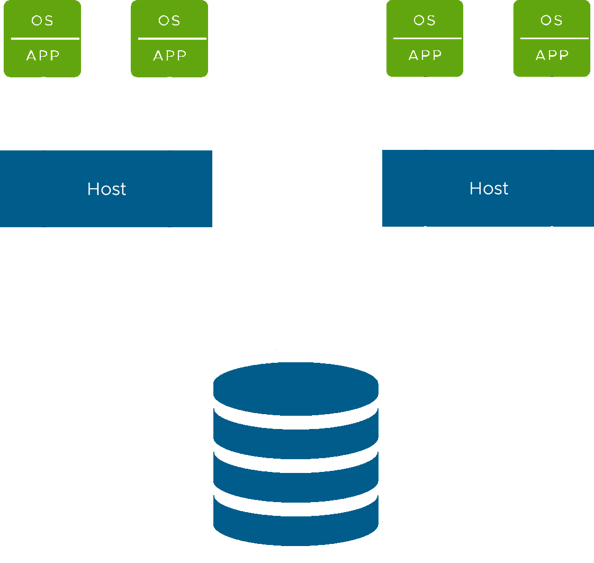

🧠 About vSAN — نَظرة عامّة
vSANيَستَخدِم أَجهِزة تَخزين مَحَلّيّة (NVMe SSDs, SSDs, HDDs) لِتَكوينDatastoreواحِد عَبر عِدّةESX Hosts.- يَدعَم سياسات
RAID-1/5/6، حَتّى 3 أَعطال مَسموحة. - تَشفير البَيانات أَثناء السُّكون وَأَثناء النَّقل.
- ضَغط وَإِزالة التَّكرار.
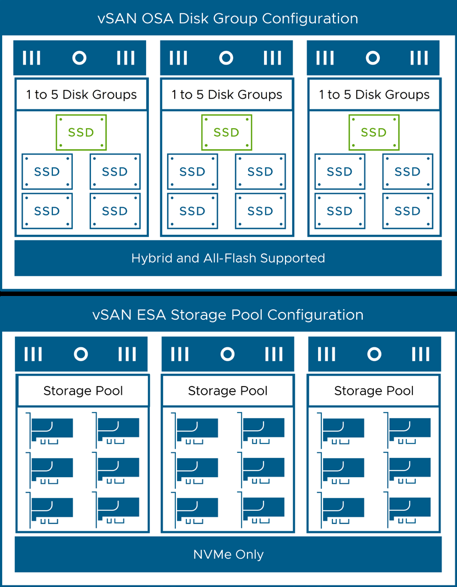
1.3 Fibre Channel وَ iSCSI
🧠 Fibre Channel (FC) Overview
FCيُرسِل أَوامِرSCSIعَبر شَبَكة Fibre Channel إِلى تَخزين مَركَزي.HBAs(Host Bus Adapters) تَربُطESXبِشَبَكة FC.- يَدعَم
ESXسُرعات حَتّى 128 Gbps وَFCoE. LUNsمِن الـ Storage Array تُصبِح مُتاحة وَتُهَيَّأ كَـVMFS Datastores.
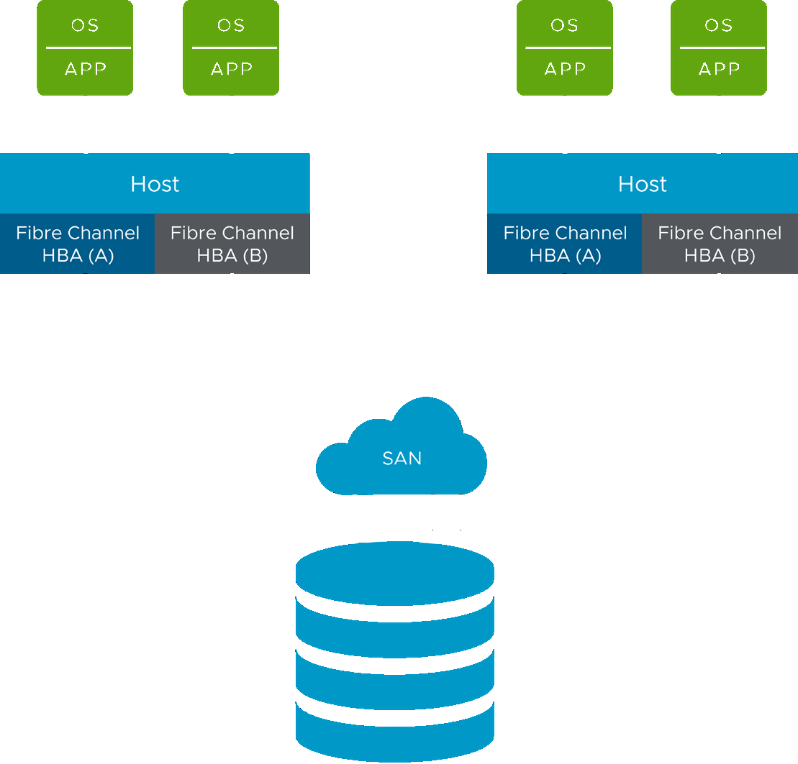
🧠 iSCSI Overview
iSCSIيُرسِل أَوامِرSCSIعَبر شَبَكة Ethernet.- يَستَخدِم NICs عاديّة أَو
Hardware iSCSI HBAs. - في
VCF: يُستَخدَم كَـ Supplemental Storage فَقَط.
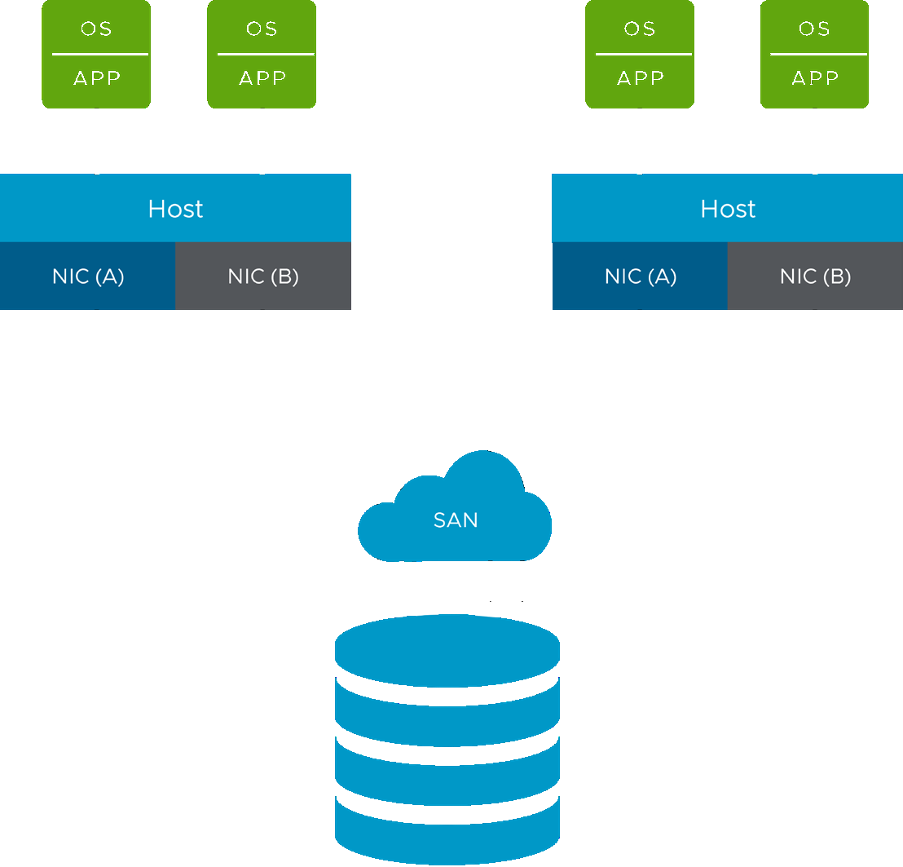
1.4 VMFS وَ NFS
🧠 VMFS — Virtual Machine File System
- نِظام مَلَفّات مُتَخَصِّص لِلتَّخزين القائِم عَلى
Block(FC أَو iSCSI). - Concurrent Access — عِدّة
ESX Hostsتَقرَأ وَتَكتُب في نَفس الوَقت. - On-Disk Locking — يَمنَع تَشغيل نَفس الـ VM عَلى أَكثَر مِن Host.
- الحُدود:
- حَتّى 128 host لِكُلّ Datastore.
- حَتّى 1,024 LUN لِكُلّ ESX Host.
- حَجم أَقصى: 64 TB لِلـ Datastore.
- يَدعَم أَجهِزة
4K Native.
Space Reclamationتِلقائي (UNMAP).
🧠 NFS — Network File System
- بُروتوكول مُشارَكة مَلَفّات عَبر Ethernet لِلوُصول إِلى
NAS. - يَدعَم
NFS v3وَNFS v4.1. - NFS v3: قَفل بِواسِطة VMware (لَيس NLM). NFS v4.1: قَفل مِن الـ Server.
- تَحذير: لا تَخلِط
v3وَv4.1عَلى نَفس الـ Datastore — خَطَر فَساد البَيانات. - أَفضَل مُمارَسة: عَزل traffic الـ NFS في شَبَكة مُنفَصِلة.
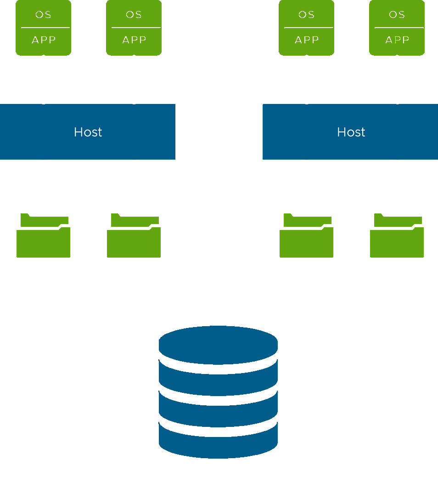
🧠 NFS-Supported vSphere Solutions
| Feature | NFS v3 | NFS v4.1 |
|---|---|---|
| vMotion / Storage vMotion | ✅ | ✅ |
| HA / FT / DRS | ✅ | ✅ |
| Storage DRS | ✅ Full | Initial Placement فَقَط |
| Storage I/O Control | ✅ | ❌ |
لِكُلّ ESX Host: حَتّى 256 NFS mount. حَجم VMDK أَقصى: 62 TB.
1.5 NVMe over Fabrics
🧠 NVMe over Fabrics (NVMe-oF)
- يُرسِل أَوامِر
NVMeعَبر الشَّبَكة. أَسرَع مِن iSCSI وَ FC التَّقليدي. - أَقَلّ Latency، أَعلى Throughput، طَلَبات مُتَوازية، حِمل CPU أَقَلّ.
- الأَنواع المَدعومة:
NVMe/TCP— عَبر TCP/IP.NVMe/FC— عَبر Fibre Channel.NVMe/RDMA— نَقل مُباشِر لِلـ memory بِدون TCP.
- يُستَخدَم كَـ Supplemental Storage في VCF.
🧠 Datastore Contents — المُحتَوى
- Block-backed (SAN — iSCSI/FC): بَيانات مُخَزَّنة كَـ blocks.
- File-backed (NAS — NFS): بَيانات في تَسَلسُل هَرَمي (folders/files).
- Object-based (vSAN): كُلّ VM = مَجموعة Objects (VM config + VMDKs + swap). كُلّ Object لَه بَيانات وَ metadata وَ ID فَريد.
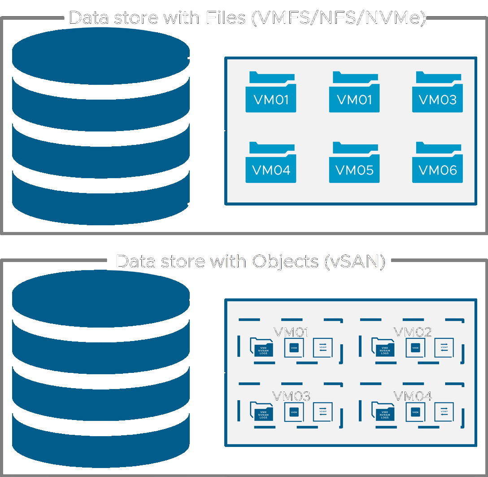
🧠 Datastore Summary — مُلَخَّص
| Datastore Type | Access Method | Contents |
|---|---|---|
vSAN | Block | Objects |
VMFS (FC/iSCSI) | Block | Files |
NFS | File | Files |
NVMe | Block | Files |
1.6 · Deep Dive Concept Cards — ما يَجِب أَن يَعرِفَه مُهَندِس التَّخزين
هَذِه البِطاقات تُعَمِّق فَهمَك لِلمَفاهيم الأَساسيّة في هَذا المودول. لَيسَت «مَعلومات إِضافيّة» — هِيَ ما يَفصِل المُهَندِس الَّذي يَفهَم لِماذا عَن الَّذي يَحفَظ فَقَط.
Datastore هُوَ abstraction layer — يُخفي تَفاصيل التَّخزين الفِعلي (LUNs, NFS exports, vSAN objects) وَيُقَدِّم واجِهة مُوَحَّدة لِلـ VMs. لَكِن سُلوكه يَختَلِف جَذريّاً حَسَب النَّوع.
- VMFS Datastore: Block device → File system. كُلّ VM = مُجَلَّد يَحتَوي .vmx + .vmdk + .nvram + .log files.
- NFS Datastore: Remote mount. نَفس بِنية المَلَفّات لَكِن عَبر الشَّبَكة. Locking عَلى مُستَوى Array.
- vSAN Datastore: Object store. كُلّ VM = مَجموعة Objects (VM Home + VMDKs + Swap). لا مَلَفّات تَقليديّة — Objects مَع metadata.
- VMFS: ESX يَفتَح .vmx → يَحجِز .vswp → يَفتَح .vmdk files → I/O يَمُرّ عَبر SCSI/NVMe stack.
- NFS: ESX يَفتَح المَلَفّات عَبر NFS client → locking عَلى Array → I/O عَبر TCP/IP.
- vSAN: ESX يَقرَأ Object metadata → يَعرِف أَين كُلّ component → I/O مُباشِر لِلـ owner host أَو locally.
- «كُلّ Datastores مُتَشابِهة» — لا! vSAN datastore لا يَظهَر في
ls /vmfs/volumes/بِنَفس الطَّريقة. لا تَبحَث عَن .vmdk files عَلى vSAN. - «VMFS 6 = VMFS 5» — VMFS 6 يَدعَم 4K native وَ automatic UNMAP. الفُروق مُهِمّة لِلأَداء.
لِلتَّخزين الخارِجي (FC, iSCSI, NVMe-oF)، كُلّ host لَديه مَسارات مُتَعَدِّدة لِلوُصول لِنَفس الـ LUN. PSP (Path Selection Plugin) يُقَرِّر أَيّ مَسار يُستَخدَم لِكُلّ I/O.
- NMP (Native Multipathing Plugin) — الإِطار الرَّئيسي في ESX.
- SATP (Storage Array Type Plugin) — يَتَعَرَّف عَلى نَوع الـ Array وَيُحَدِّد السُّلوك.
- PSP (Path Selection Plugin) —
Round Robin(افتِراضي) |Fixed|MRU. - HPP (High Performance Plugin) — لِلـ NVMe-oF. يَستَبدِل NMP بِالكامِل.
- Round Robin يُوَزِّع I/O عَلى كُلّ المَسارات — أَفضَل throughput.
- Fixed مَسار واحِد فَقَط — لِلـ arrays القَديمة الَّتي لا تَدعَم ALUA.
- HPP أَقَلّ latency — مُصَمَّم لِ NVMe queues المُتَعَدِّدة.
Host لَديه 2× FC HBAs، كُلّ HBA مُتَّصِل بِ 2 FC switches → 4 paths لِكُلّ LUN. مَع Round Robin وَ IOPS=1، كُلّ I/O يَذهَب عَبر path مُختَلِف → 4× throughput مُقارَنة بِ Fixed.
عِندَما تَحذِف مَلَفّات داخِل VM، المِساحة لا تُعاد لِلـ Datastore تِلقائيّاً — هَذا «dead space». UNMAP يُخبِر الـ Array/vSAN أَنَّ هَذِه الـ blocks لَم تَعُد مَطلوبة.
- Guest OS يَحذِف مَلَفّ → يُرسِل TRIM/UNMAP لِلـ virtual disk.
- ESX يَستَلِم الأَمر → يُتَرجِمه لِـ SCSI UNMAP لِلـ Datastore.
- VMFS 6: Automatic UNMAP (background priority 50%). لا حاجة لِأَوامِر يَدَويّة.
- vSAN: UNMAP/TRIM يَعمَل تِلقائيّاً — مُدمَج في الـ object management.
- NFS: لا يَدعَم UNMAP. المِساحة تَبقى مَحجوزة حَتّى يُحذَف الـ .vmdk file.
- «حَذَفت VMs لَكِن المِساحة لَم تَتَحَرَّر» — تَأَكَّد أَنَّ الـ disk هُوَ Thin وَلَيسَ Thick Eager Zero.
- «UNMAP يُؤَثِّر عَلى الأَداء» — في VMFS 6، الـ priority مُنخَفِض (50/1000). لَن تُلاحِظ تَأثيراً.
1.7 Knowledge Check
Q1. What is the difference between Principal and Supplemental storage?
Correct: C
Principal storage is permanent for the domain; Supplemental is optional and removable.
Q2. Which storage type is used only as Supplemental in VCF?
Correct: C
iSCSI is supported only as Supplemental storage in VCF.
Q3. What is the maximum VMFS datastore size?
Correct: B
VMFS supports up to 64 TB per datastore.
Q4. Why must you NOT mix NFS v3 and v4.1 on the same datastore?
Correct: C
Mixing NFS v3 and v4.1 on the same datastore risks data corruption due to different locking mechanisms.
Q5. Which NVMe-oF transport uses direct memory transfer without TCP?
Correct: C
NVMe/RDMA transfers data directly between memory without TCP overhead.
Q6. How many hosts can access a single VMFS datastore concurrently?
Correct: C
Up to 128 ESX hosts can access a single VMFS datastore concurrently.
Q7. vSAN stores VM data as:
Correct: C
vSAN is object-based storage — each VM component (VMDK, swap, config) is an object with its own storage policy.
Q8. Which feature is NOT supported with NFS v4.1?
Correct: C
Storage I/O Control (SIOC) is not supported with NFS v4.1.
02 · نَظرة عامّة عَلى vSAN | vSAN Storage Overview
2.1 مُقَدِّمة vSAN | vSAN Introduction
vSAN هُوَ مَنصّة التَّخزين الأَساسيّة في VCF. بَدَلاً مِن شِراء SAN مُنفَصِل، يُجَمِّع الأَقراص المَحَلّيّة في كُلّ ESX Host وَيُنشِئ Datastore واحِد مُوَزَّع عَلى الـ Cluster بِالكامِل.
🧠 vSAN Storage Overview — النَّظرة الشامِلة
vSAN= طَبَقة بَرمَجيّة مُوَزَّعة داخِلESX Hypervisor.- يُجَمِّع التَّخزين المَحَلّي عَبر الشَّبَكة في
Datastoreواحِد لِلـ Cluster كامِلاً. - يُطَبِّق سياسات التَّخزين عَلى مُستَوى
VM/VMDK. - يُوَفِّر
HAمِن خِلال تَحَمُّل الأَعطال المَدمَج. - يُدار عَبر
vSphere ClientوَSDDC Manager— لا أَدَوات خارِجيّة. - تَكلِفة أَقَلّ بِإِلغاء الحاجة لِـ SAN hardware مُنفَصِل.
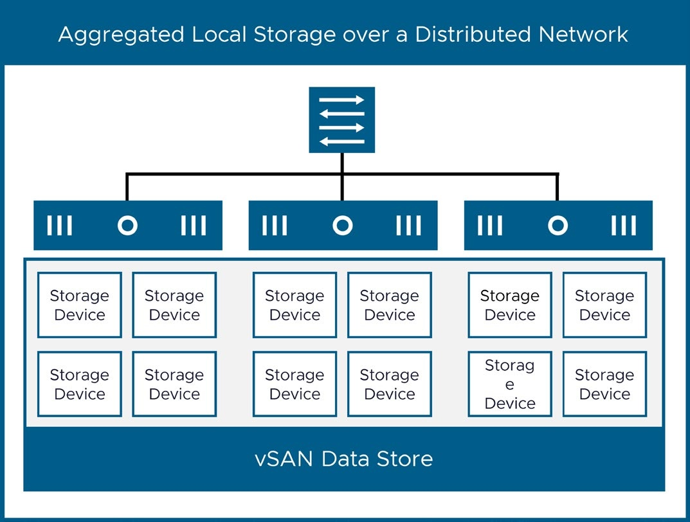
2.2 أَنواع Clusters | Cluster Types
🧠 vSAN Cluster Types — أَنواع الـ Clusters
| النَّوع | الوَصف | الحُدود |
|---|---|---|
| Single-Site | الأَكثَر شُيوعاً. كُلّ الـ Hosts في مَوقِع واحِد. | 3–64 host |
| Two-Node | لِلمَكاتِب الفَرعيّة الصَّغيرة. يَحتاج Witness Appliance. | حَتّى 25 VM (ROBO) |
| Stretched | عَبر مَوقِعَين جُغرافِيَّين. حِماية مِن فَشَل المَوقِع. | حَتّى 20 host لِكُلّ site |
| Storage Cluster | مُشارَكة Datastores بَين Clusters مُختَلِفة. | ثُنائي أَو أُحادي الاتِّجاه |
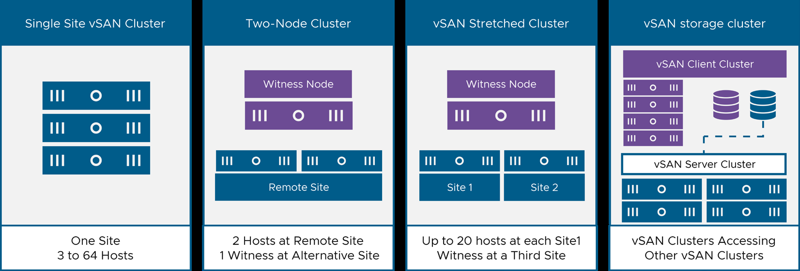
🧠 Object vs Block vs File Storage
- vSAN = Object-based — كُلّ VMDK هُوَ Object مَع سياسة تَخزين خاصّة.
- VMFS = Block-based — بَيانات كَـ blocks عَلى LUNs.
- NFS = File-based — مَلَفّات في تَسَلسُل هَرَمي.
تَشبيه: vSAN Datastore = خِزانة مَلَفّات. Objects = مُجَلَّدات. سياسة التَّخزين تُحَدِّد كَيف تُخَزَّن البَيانات. RAID-1 = نُسخَتان. RAID-5 (3+1) = 3 شَرائِح بَيانات + 1 Parity.
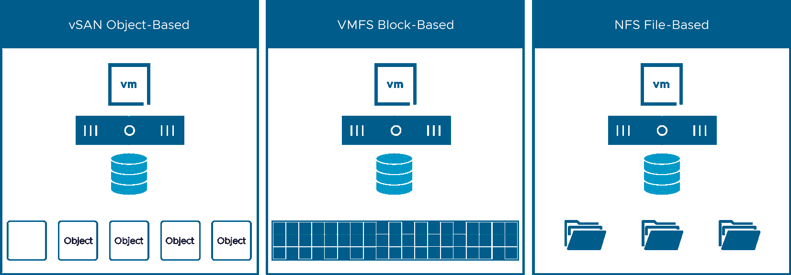
2.3 خَصائِص vSAN Datastore
🧠 vSAN Datastore — الخَصائِص
Datastoreواحِد مُشتَرَك لِكُلّ الـ Cluster.- قابِل لِلتَّوَسُّع بِإِضافة أَجهِزة أَو hosts.
- سياسات التَّخزين تُحَدِّد مَوقِع البَيانات وَمُستَوى الحِماية.
- يَدعَم
File Services(SMB/NFS/iSCSI). - سياسات افتِراضيّة وَمُخَصَّصة (RAID-0/1/5/6).
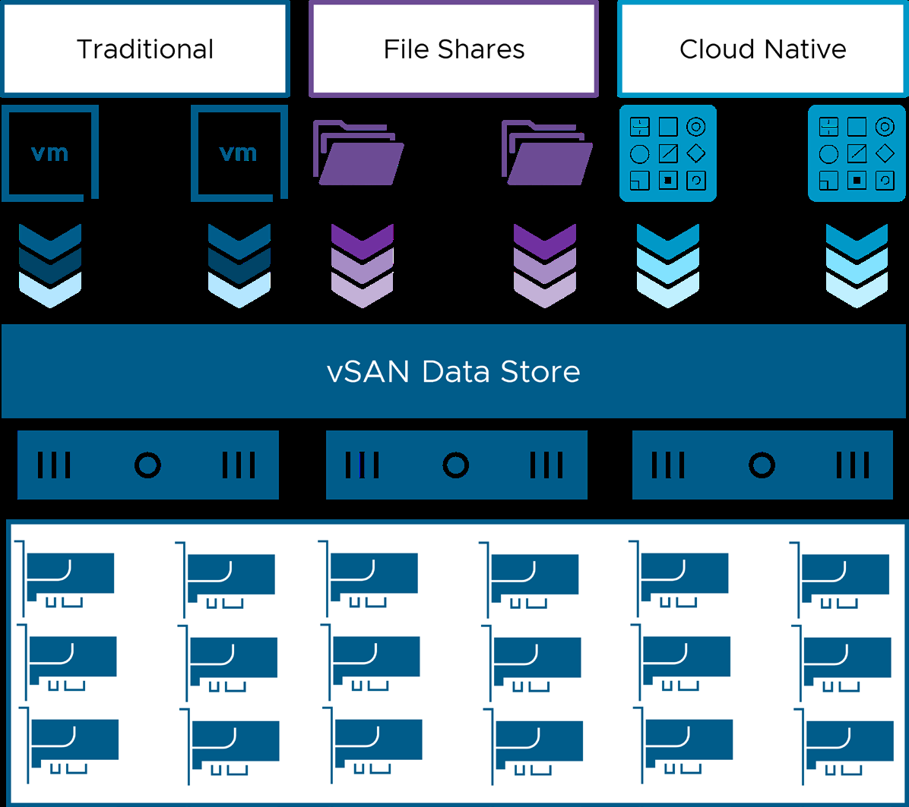
🧠 vSAN Features — المَيِّزات
- Data-at-Rest Encryption — تَشفير البَيانات عَلى الأَقراص.
- Data-in-Transit Encryption — تَشفير البَيانات أَثناء النَّقل بَين Hosts.
- File Shares — مُشارَكة مَلَفّات (SMB/NFS) لِلـ VMs وَالأَنظِمة الخارِجيّة.
- iSCSI Target — تَخزين لِلـ VMs وَالأَنظِمة الفِعليّة.
- Dedup & Compression — مَدعوم في OSA وَ ESA. الضَّغط مُفَعَّل افتِراضيّاً في ESA.
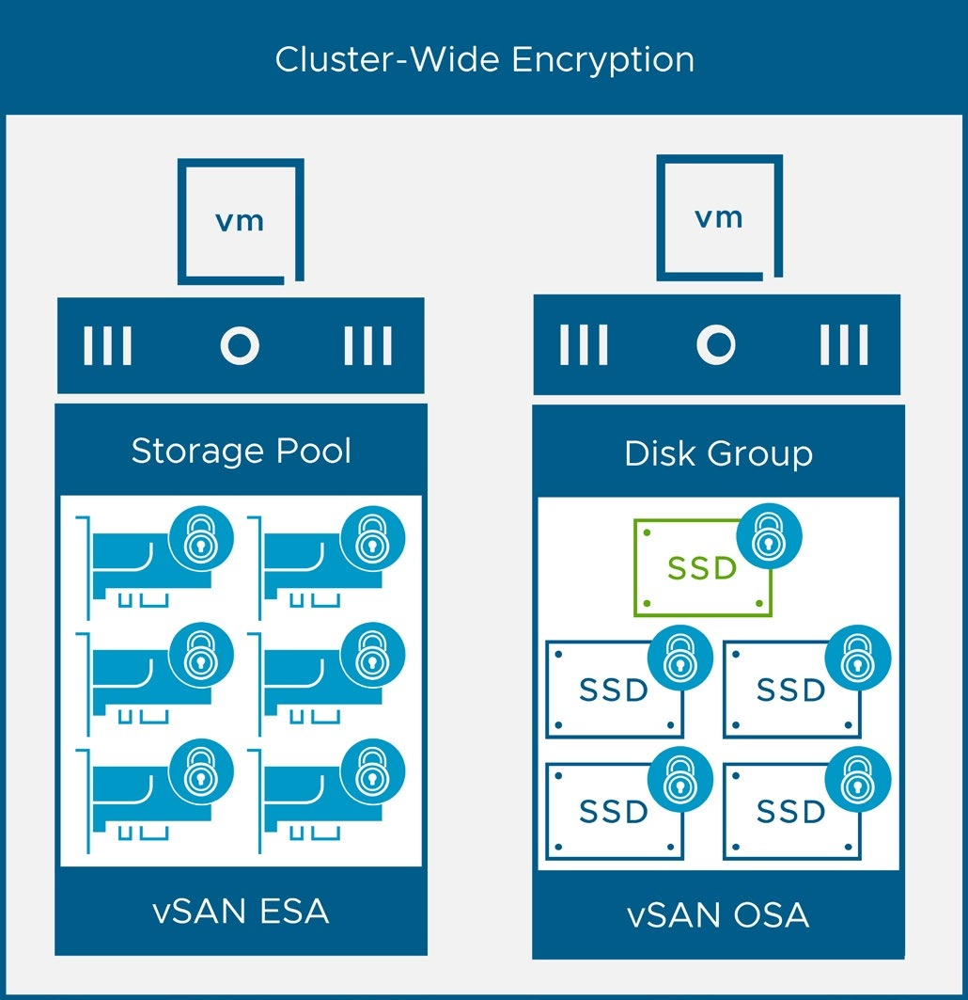
2.4 OSA vs ESA — المُقارَنة
🧠 vSAN OSA vs vSAN ESA
| المِيزة | vSAN OSA (مُنذ 2014) | vSAN ESA (مُنذ 2022) |
|---|---|---|
| البِنية | طَبَقَتان: Cache Tier + Capacity Tier (Disk Groups) | طَبَقة واحِدة: Storage Pool (NVMe فَقَط) |
| الأَقراص | NVMe/SSD/HDD | NVMe SSDs فَقَط |
| التَّهيئة | All-Flash أَو Hybrid | All-NVMe فَقَط |
| الضَّغط | اختِياري | مُفَعَّل افتِراضيّاً |
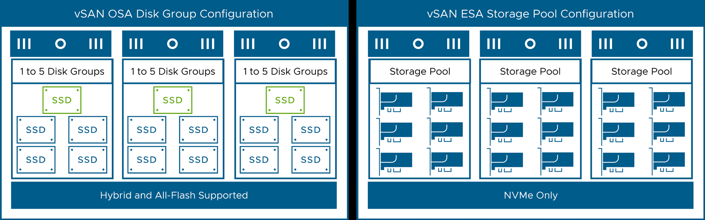
🧠 vSAN OSA — Hardware Requirements
- Certified Compute Node (ReadyNode أَو Build-Your-Own).
- الحَدّ الأَدنى: 32 GB RAM.
- NIC: 10 Gbps مُخَصَّص أَو مُشتَرَك.
- Cache Tier: ≥ 1 SSD (NVMe/SATA/SAS).
- Capacity Tier: ≥ 1 SSD أَو HDD.
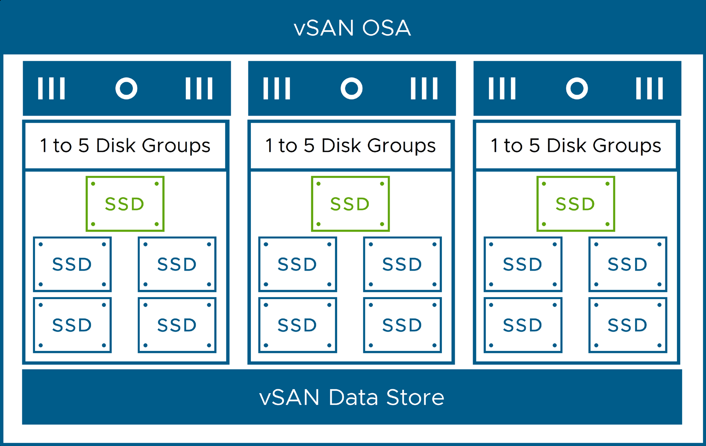
🧠 vSAN ESA — Hardware Requirements
- ReadyNode فَقَط — لا Build-Your-Own.
- الحَدّ الأَدنى: 16 CPUs، 128 GB RAM.
- NIC: 25 Gbps لِـ vSAN traffic (10 GbE مَع AF-0 profile فَقَط).
- الأَقراص: ≥ 2 NVMe SSDs لِكُلّ host، ≥ 1.6 TB لِكُلّ قُرص.
- SAS/SATA غَير مَدعوم.
- فِئة القُرص:
Class D+(endurance) أَوClass F(performance).
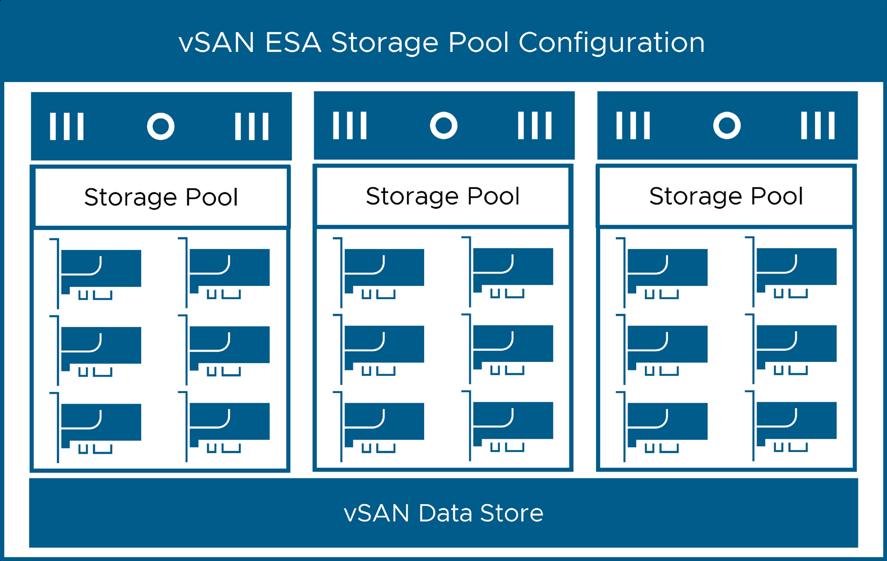
2.5 سياسات التَّخزين | Storage Policies
🧠 vSAN Storage Policies — مُقَدِّمة
- المُدير يُحَدِّد سياسة التَّخزين (No Data Redundancy / RAID-1 / RAID-5 / RAID-6).
- يُحَدِّد عَدَد الأَعطال المَسموحة (
FTT 0–3). - يُحَدِّد خَصائِص الأَداء (IOPS limits, caching).
- يُطَبِّق السِّياسة عَلى Objects الـ VM.
vSANيُوَزِّع البَيانات عَبر الـ Hosts وَفق السِّياسة.- عِند حُدوث عُطل،
vSANيُعيد الـ Object إِلى الامتِثال تِلقائيّاً.
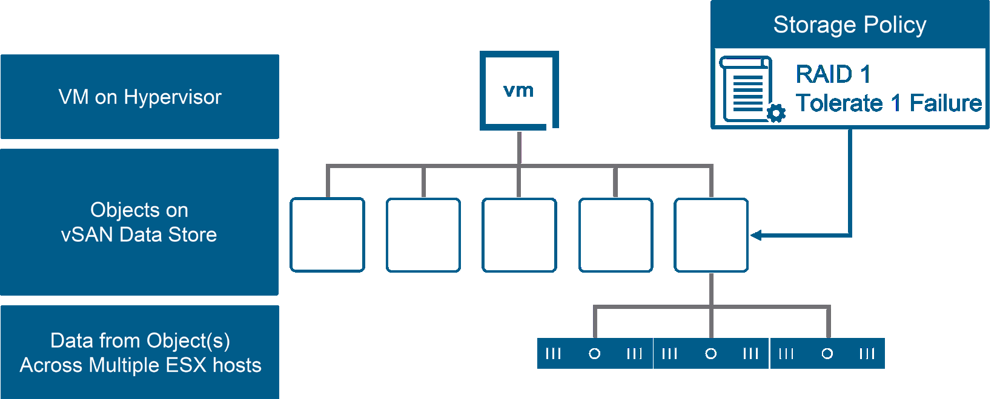
2.6 · Deep Dive Concept Cards — ما يَجِب أَن يَعرِفَه مُهَندِس vSAN
كُلّ بِطاقة تُغَطّي مَفهوماً أَساسيّاً لا يُمكِن العَمَل بِدونِه في بيئة vSAN حَقيقيّة.
vSAN يَعتَمِد كُلّيّاً عَلى الشَّبَكة — كُلّ I/O يَمُرّ عَبر vSAN VMkernel port. إِذا كانَت الشَّبَكة بَطيئة أَو غَير مُستَقِرّة، التَّخزين بِالكامِل يَتَأَثَّر.
- OSA: 10GbE minimum (مُوصى 25GbE). Dedicated أَو shared مَع vMotion.
- ESA: 25GbE minimum (مُوصى 100GbE). Dedicated لِـ vSAN traffic.
- MTU: 9000 (Jumbo Frames) لِأَفضَل أَداء — يَجِب أَن يَكون end-to-end.
- Multicast → Unicast: في vSAN 7.0 U1+، لا حاجة لِ multicast. Unicast فَقَط.
- RDMA: اختِياري لِـ ESA — يُقَلِّل latency بِشَكل كَبير (RoCE v2).
- «10GbE كافٍ لِ ESA» — لا! ESA يَكتُب Performance Leg mirrors عَلى الشَّبَكة. 10GbE = bottleneck دائِم.
- «Jumbo Frames عَلى vSAN فَقَط» — يَجِب تَفعيلها عَلى: VMkernel + vSwitch + Physical Switch + الطَّرَف الآخَر.
- «شَبَكة واحِدة لِكُلّ شَيء» — لا تَخلِط vSAN traffic مَع VM traffic. استَخدِم NIOC أَو Physical separation.
Cluster مِن 8 hosts ESA. كُلّ host لَديه 2× 25GbE NICs. NIC1 = vSAN + vMotion (NIOC: vSAN 80%, vMotion 20%). NIC2 = VM traffic. Jumbo Frames مُفَعَّلة end-to-end. النَّتيجة: ~18Gbps effective لِ vSAN per host.
كُلّ vSAN Object لَديه Witness — component صَغير (metadata فَقَط) يُصَوِّت في حالة الاِنقِسام. الأَغلَبيّة (Quorum) = أَكثَر مِن 50% مِن الأَصوات يَجِب أَن تَكون مُتاحة.
- RAID-1 FTT=1: Object = 2 data replicas + 1 witness. كُلّ مُكَوِّن = 1 صَوت. الأَغلَبيّة = 2 مِن 3.
- RAID-5 (4+1): Object = 5 components. كُلّ component = 1 صَوت. الأَغلَبيّة = 3 مِن 5.
- Network Partition: الجانِب الَّذي يَملِك الأَغلَبيّة يَبقى Active. الآخَر = Inaccessible.
- Two-Node Cluster: Witness VM عَلى host ثالِث (أَو في vSphere). بِدون Witness = لا quorum عِند فَشَل host.
- «Witness يُخَزِّن بَيانات» — لا! Witness = metadata + vote فَقَط. حَجمُه صَغير جِدّاً.
- «3 hosts + RAID-5 = آمِن» — RAID-5 (2+1) عَلى 3 hosts: فَقَدان host واحِد = لا quorum لِبَعض objects!
ESA لَيسَ مُجَرَّد «OSA بِدون Cache Tier». هُوَ إِعادة كِتابة كامِلة لِلـ I/O path. الفُروق جَوهَريّة في كَيف يَتَعامَل مَع الكِتابة وَالقِراءة.
- OSA — Log-Structured: كُلّ كِتابة → Cache SSD (log) → destage إِلى Capacity. Cache = bottleneck وَ single point of wear.
- ESA — Direct Write: كُلّ كِتابة → Performance Leg (N+1 mirrors) → Capacity Leg (full stripe). لا log، لا destage overhead.
- OSA — Disk Groups: 1 Cache + 1-7 Capacity per group. فَشَل Cache = فَقَدان كُلّ Disk Group!
- ESA — Storage Pool: كُلّ الأَقراص في pool واحِد. فَشَل قُرص واحِد = فَقَدان ذَلِك القُرص فَقَط.
- OSA — Dedup/Compress: Capacity Tier فَقَط. لا يَعمَل عَلى Cache.
- ESA — Compression: مُفَعَّل دائِماً عَلى كُلّ الطَّبَقات. لا Dedup مُنفَصِل — الضَّغط يَكفي.
- 4.5 ops vs 6 ops ESA يَحتاج عَمَليّات أَقَلّ لِكُلّ كِتابة (توفير 25% I/O).
- No Cache Bottleneck لا يوجَد Cache SSD يَتآكَل أَو يَمتَلِئ.
- Better Failure Domain فَشَل قُرص = فَقَدان 1 disk، لَيسَ disk group كامِل.
- Higher HW Bar ESA يَحتاج NVMe-only + 128GB RAM + 25GbE. لا HDD إِطلاقاً.
2.7 Knowledge Check
Q1. What is vSAN?
Correct: B
vSAN is a distributed software layer within ESX that aggregates local storage into a shared datastore.
Q2. How many hosts can a Single-Site vSAN cluster support?
Correct: B
Single-Site vSAN clusters support 3 to 64 hosts.
Q3. Which vSAN cluster type requires a Witness Appliance?
Correct: B
Two-Node clusters require a Witness Appliance at the main DC or a third site.
Q4. What is the key architectural difference between OSA and ESA?
Correct: C
OSA = two-tier Disk Groups (cache + capacity). ESA = single-tier Storage Pool (NVMe only).
Q5. Minimum RAM for a vSAN ESA host?
Correct: C
vSAN ESA requires a minimum of 128 GB RAM per host.
Q6. Is compression enabled by default in vSAN ESA?
Correct: B
Compression is enabled by default in vSAN ESA.
Q7. What minimum NIC speed is required for vSAN ESA traffic?
Correct: C
vSAN ESA requires 25 Gbps NIC for vSAN traffic (10 GbE only with AF-0 profile).
Q8. Which disk types are supported in vSAN ESA?
Correct: A
vSAN ESA supports NVMe SSDs only — SAS/SATA are not supported.
03 · vSAN ESA — سياسات التَّخزين | Storage Policies
3.1 بِنية vSAN ESA | ESA Architecture
vSAN ESA يُعيد تَصميم كَيف تُخَزَّن البَيانات. بَدَلاً مِن Disk Groups ثُنائيّة الطَّبَقة (OSA)، يَستَخدِم Storage Pool أُحاديّ الطَّبَقة مَع فَصل ذَكي بَين Performance Leg وَ Capacity Leg.
🧠 Failures to Tolerate (FTT)
| FTT | المَعنى | المُتَطَلَّب |
|---|---|---|
| FTT 0 | لا تَحَمُّل — عُطل واحِد = فَقد بَيانات. | 1 host |
| FTT 1 | تَحَمُّل عُطل واحِد. | 3+ hosts |
| FTT 2 | تَحَمُّل عُطلَين. | 5+ hosts |
| FTT 3 | تَحَمُّل 3 أَعطال (RAID-1 فَقَط). | 7+ hosts |
الأَعطال تَشمَل: فَشَل أَجهِزة (disk, controller, NIC)، مَشاكِل شَبَكة، drivers/firmware.
🧠 Failure Tolerance Method (FTM)
- No Data Redundancy — لا حِماية. لا تَنجو مِن أَيّ عُطل.
- RAID-1 (Mirroring) — نُسَخ مُتَعَدِّدة. يَدعَم حَتّى FTT 3.
- RAID-5/6 (Erasure Coding) — شَرائِح بَيانات + Parity. يَدعَم حَتّى FTT 2.
Parity يَستَخدِم حِسابات رِياضيّة لِإِعادة بِناء البَيانات المَفقودة.
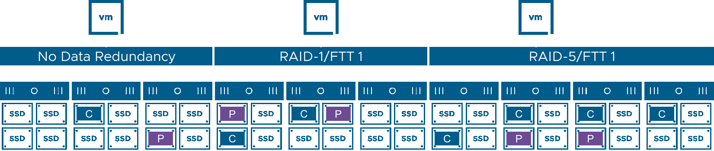
3.2 أَنواع Objects وَ Components
🧠 vSAN ESA Object Types — أَنواع الـ Objects
| النَّوع | الوَصف | مَطلوب؟ |
|---|---|---|
| VM Home Namespace | مَلَفّات تَهيئة الـ VM | ✅ الوَحيد المَطلوب |
| VMDK Object | الأَقراص الافتِراضيّة | اختِياري |
| VM Swap Object | مَلَفّ Swap | اختِياري |
| VM Memory Snapshot | لَقطة الـ memory | اختِياري |
تَغيير مُهِمّ عَن OSA: لا يُوجَد VMDK Snapshot Object مُنفَصِل — الـ Snapshots مُدمَجة مَع VMDK Object، مِمّا يُحَسِّن الأَداء.
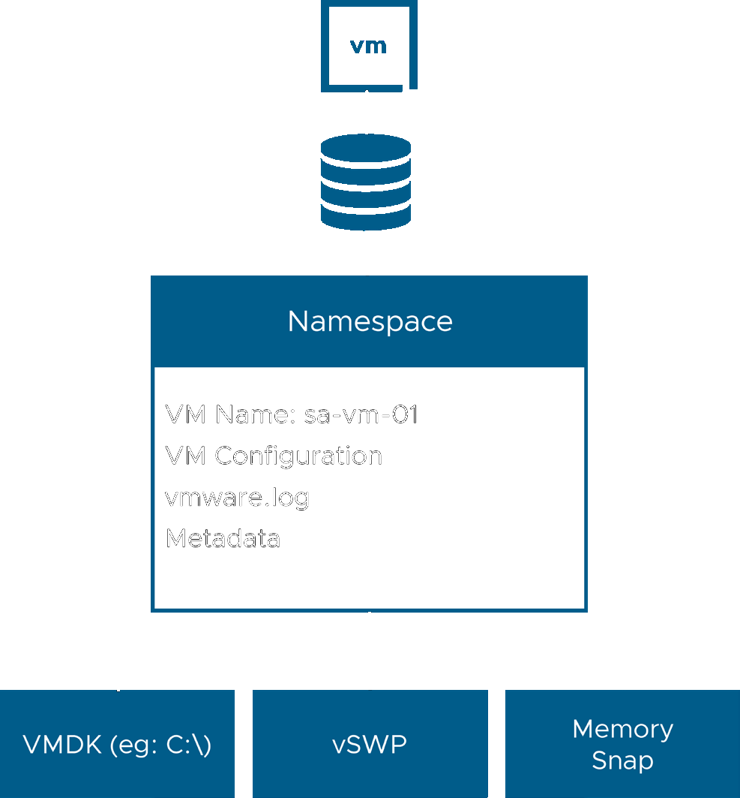
🧠 Performance Leg وَ Capacity Leg
- كُلّ Object لَه
Performance Leg(perf leg) وَCapacity Leg(cap leg). - كُلّ كِتابات جُزئيّة تَذهَب أَوَّلاً إِلى Perf Leg.
- عِندَما يَتَراكَم Full Stripe (128 KB) → يُلقى إِلى Cap Leg.
- هَذا يُلغي الكِتابات الجُزئيّة عَلى التَّخزين النِّهائي → أَداء كِتابة أَفضَل.
- الـ VM تَتَلَقّى تَأكيد الكِتابة عِند وُصول البَيانات لِلـ Perf Leg (لَيس Cap Leg).
- النَّتيجة: RAID-5/6 يُحَقِّق أَداء مُكافِئ لِـ RAID-1 مَع كَفاءة مِساحة أَعلى.
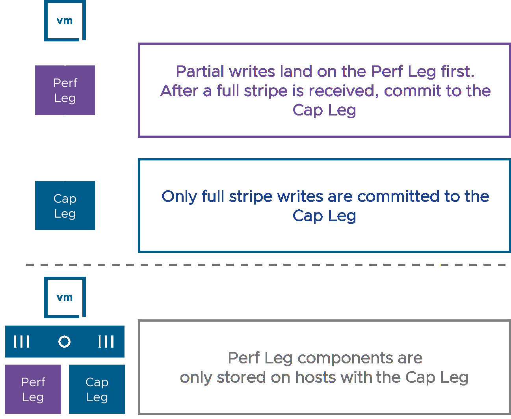
🧠 Performance Leg Components (N+1 Mirroring)
| FTT | Perf Leg Components |
|---|---|
| FTT 0 | 1 component |
| FTT 1 | 2 mirrored components |
| FTT 2 | 3 mirrored components |
| FTT 3 | 4 mirrored components |
Perf Leg components تُنشَر دائِماً عَلى ESX Hosts الَّتي فيها Cap Leg component.
vSAN ESA لا يَستَخدِم Witness Components (إِلّا في Two-Node أَو Stretched).
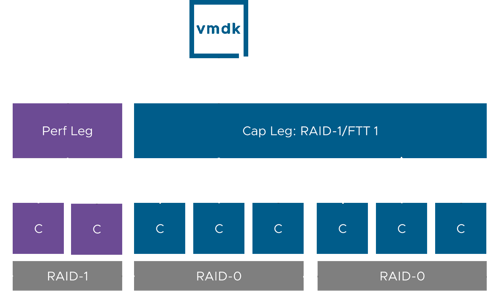
🧠 Capacity Leg — Over-Provisioning
vSAN ESAيُخَصِّص مِساحة عَنوان أَكبَر لِلتَّوَسُّع:- 3× لِـ RAID-1 (مَثَل: 3 TB addressable لِـ 1 TB VMDK)
- 2× لِـ RAID-5/6 (مَثَل: 2 TB addressable لِـ 1 TB VMDK)
- الـ Objects تُنشَأ بِـ Thin Provisioning افتِراضيّاً — لا استِهلاك فِعلي مُسبَق.
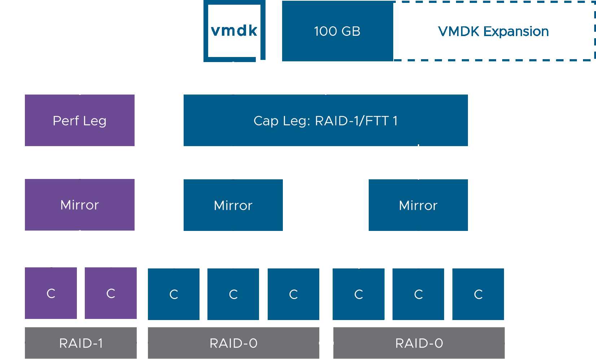
3.3 تَخطيطات RAID
🧠 No Data Redundancy (RAID-0/FTT 0)
- 1 Perf Leg component + 3 Cap Leg components (لِلتَّوَسُّع).
- لا Mirrored Set — عُطل واحِد = فَقد البَيانات.
- 128 KB يَتَراكَم في Perf Leg قَبل الإِلقاء لِلـ Cap Leg.
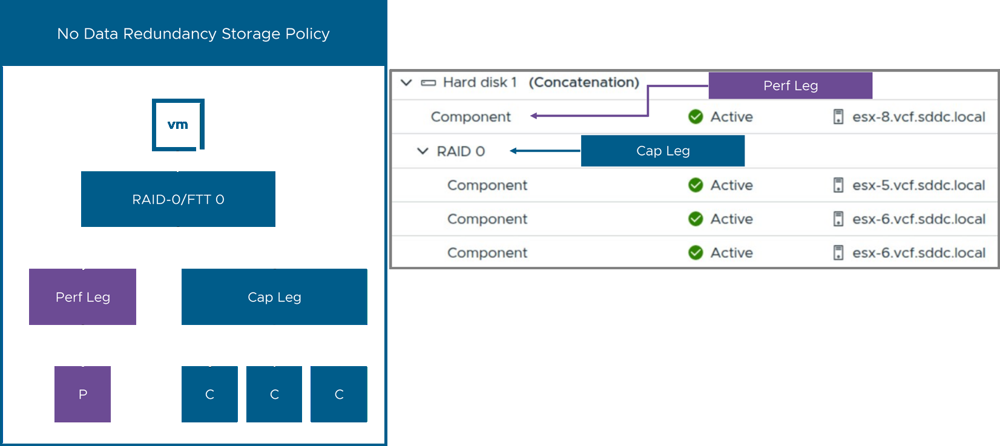
🧠 RAID-1/FTT 1 Storage Layout
- 2 Mirrored Perf Leg components.
- 2 Mirror Sets مَع 3 Child components لِكُلّ مَجموعة في Cap Leg.
- 256 KB يَتَراكَم قَبل الإِلقاء لِلـ Cap Leg.
- استِهلاك: 2× المِساحة (100 GB VMDK → 200 GB).
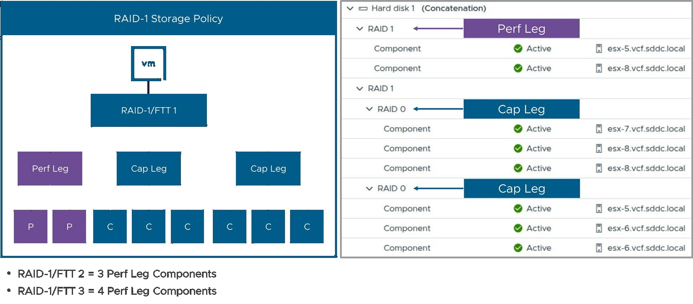
🧠 RAID-5/FTT 1 — الحَدّ الأَدنى
| التَّهيئة | الحَدّ الأَدنى المُطلَق | المُوصى بِه |
|---|---|---|
| RAID-5 (4+1) | 5 hosts | 6 hosts (5 + 1 spare) |
| RAID-5 (2+1) | 3 hosts | 4 hosts (3 + 1 spare) |
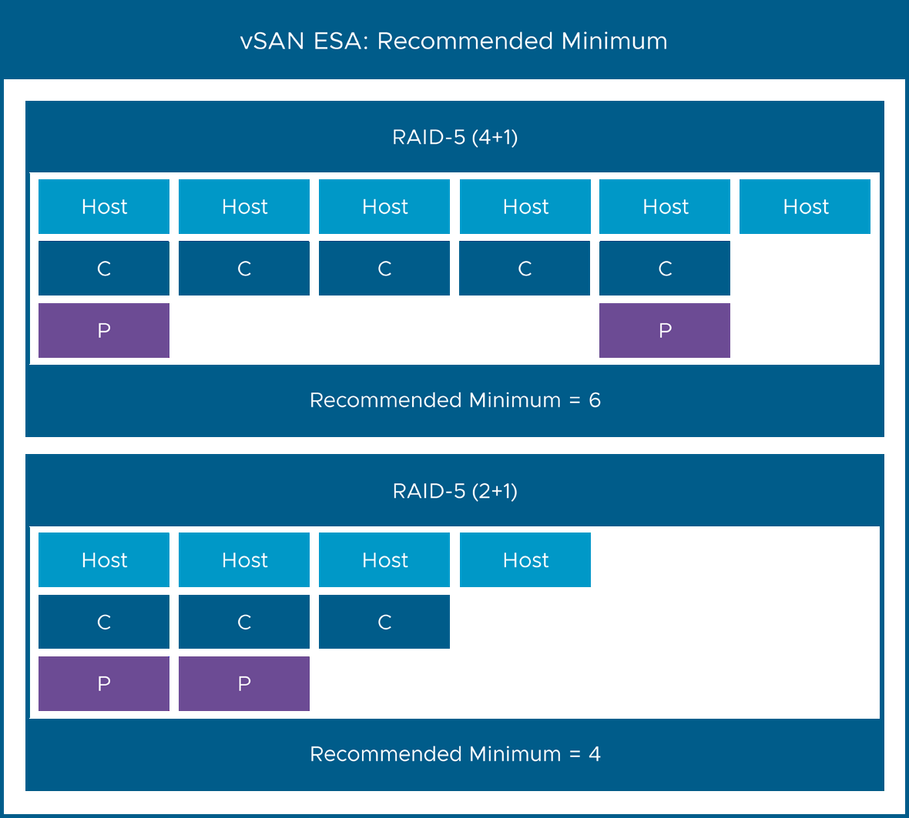
🧠 RAID-5/FTT 1 — التَّخطيط الديناميكي
- 3 hosts → 2+1 (1.5× استِهلاك مِساحة).
- 5+ hosts → 4+1 (1.25× استِهلاك مِساحة).
- Perf Leg دائِماً N+1 Mirroring (2 components لِـ FTT 1).
- 100 GB VMDK → 150 GB في 2+1 أَو 125 GB في 4+1 (مُقارَنة بِـ 200 GB في RAID-1).
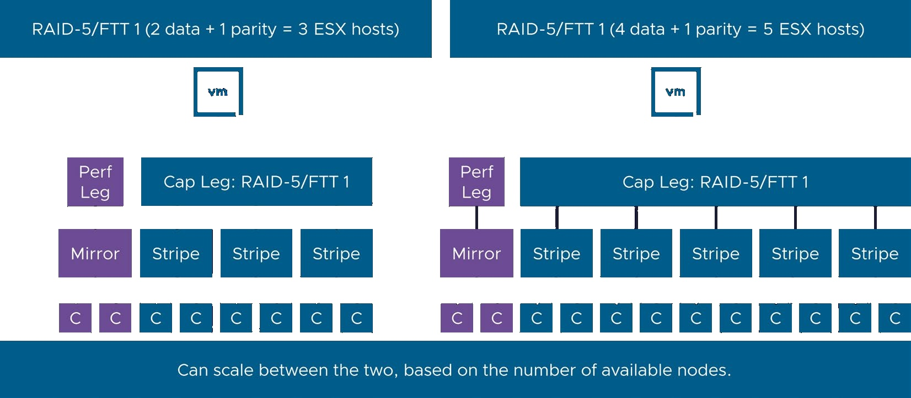
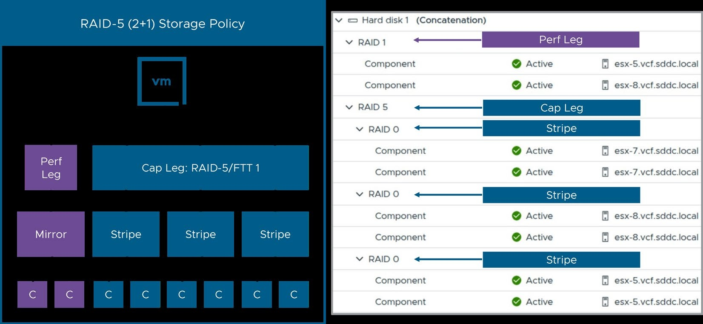
🧠 RAID-5 Distributed Parity
الفَرق بَين RAID-5 (2+1) وَ RAID-5 (4+1): الـ Parity يُوَزَّع عَبر الـ Hosts بِشَكل دَوري.
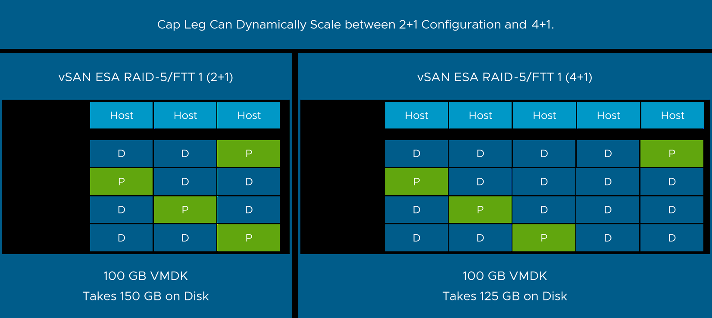
🧠 RAID-6/FTT 2 Storage Layout
- 3 Mirrored Perf Leg components.
- 6 Stripes في تَخطيط 4+2 مَع 2 RAID-0 Child components لِكُلّ Stripe.
- لا يَتَكَيَّف ديناميكيّاً (عَكس RAID-5).
- 512 KB يَتَراكَم في Perf Leg قَبل الإِلقاء.
- استِهلاك: 1.5× المِساحة (100 GB VMDK → 150 GB).
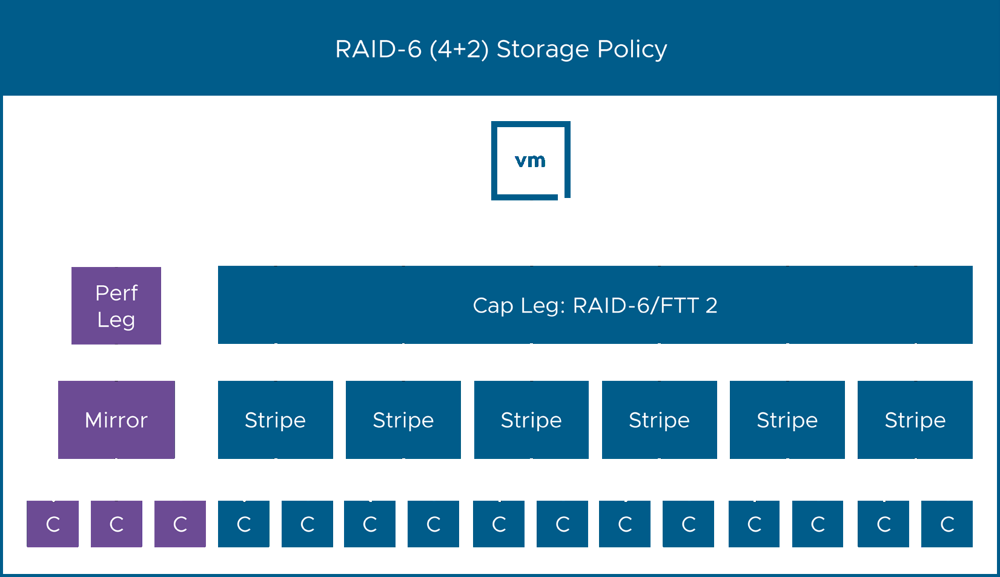
3.4 تَحسين الكِتابة وَمُقارَنة المِساحة
🧠 Write Improvement — تَحسين الكِتابة
- Guest OS يُصدِر كِتابة لِلـ Virtual Disk.
- الكِتابة تُرسَل إِلى ESX Hosts بِـ Perf Leg components.
- ESX يَكتُب في Perf Leg component.
- تَأكيد يُرسَل لِلـ Guest OS.
- Full Stripe يَتَراكَم (128 KB لِكُلّ data bit) → يُلقى لِلـ Cap Leg.
مُقارَنة:
- vSAN OSA RAID-6: 6 عَمَليّات (3 reads + 3 writes)
- vSAN ESA RAID-6: 4.5 عَمَليّات (3 perf writes + 1.5 cap writes) → أَسرَع
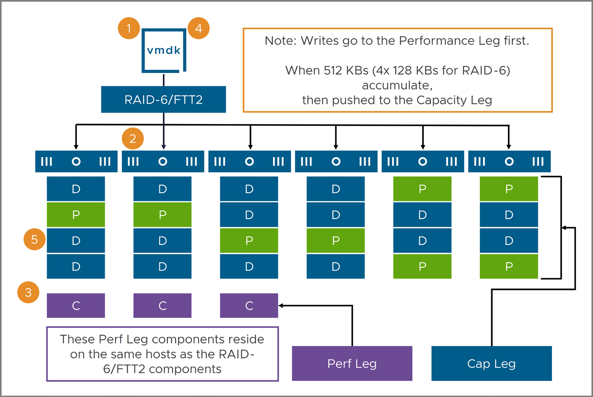
🧠 Storage Space Consumption — مُقارَنة المِساحة
| السِّياسة | 100 GB VMDK | المُضاعِف |
|---|---|---|
| No Data Redundancy | 100 GB | 1× |
| RAID-1/FTT 1 | 200 GB | 2× |
| RAID-5 (2+1)/FTT 1 | 150 GB | 1.5× |
| RAID-5 (4+1)/FTT 1 | 125 GB | 1.25× |
| RAID-1/FTT 2 | 300 GB | 3× |
| RAID-6 (4+2)/FTT 2 | 150 GB | 1.5× |
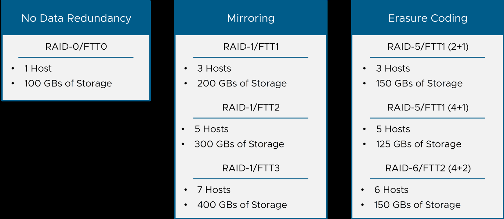
3.5 Auto-Policy Management
🧠 Auto-Policy Management — ESA
مُفَعَّل افتِراضيّاً. يَفحَص تَهيئة الـ Cluster وَيُنشِئ سِياسة مِثاليّة تِلقائيّاً.
| عَدَد الـ Hosts | السِّياسة التِّلقائيّة (مَع Host Rebuild Reserve) |
|---|---|
| 3 | غَير مَدعوم |
| 4 | vSAN Datastore Default Policy |
| 5–6 | vSAN ESA Default Policy — RAID-5 |
| 7+ | vSAN ESA Default Policy — RAID-6 |
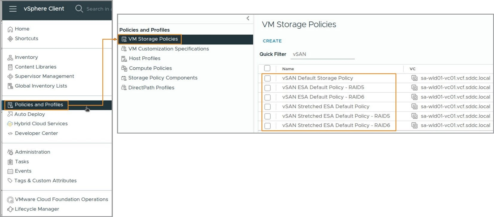
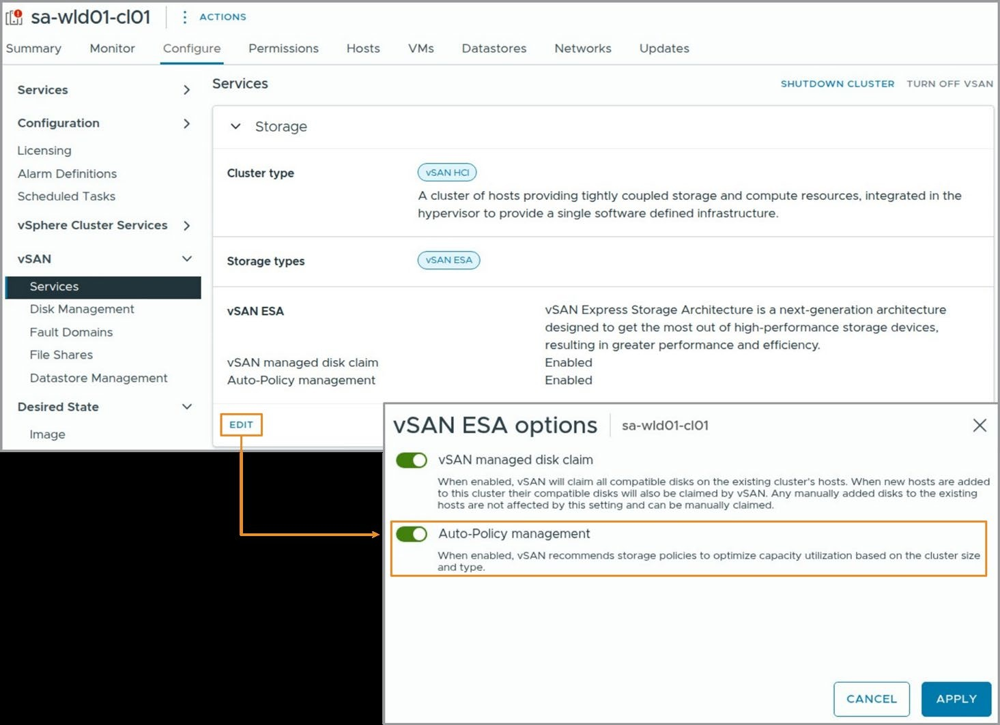
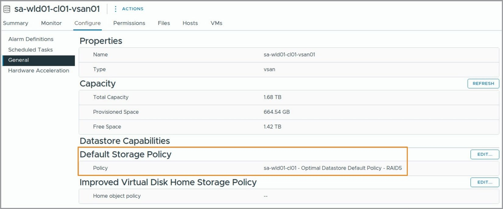
🧠 Applying Policies to VMs
- السِّياسات الافتِراضيّة تُطَبَّق عَلى كُلّ VMs الجَديدة.
- يُمكِن تَطبيق سِياسة مُختَلِفة عَلى VM مُحَدَّد أَو Object مُحَدَّد.
- لِلتَّحَقُّق:
Home → VM Storage Policies → اختَر السِّياسة → Compliance Status.
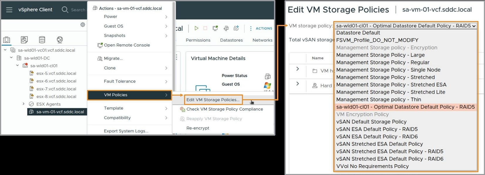
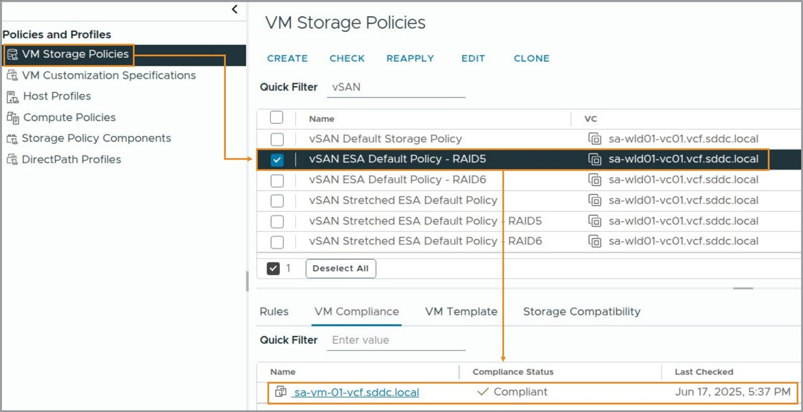
3.6 · Deep Dive Concept Cards — ما يَجِب أَن يَعرِفَه مُهَندِس السِّياسات
سِياسات التَّخزين هِيَ «العَقل» الَّذي يُوَجِّه vSAN. هَذِه البِطاقات تَشرَح ما وَراء الأَرقام.
في ESA، كُلّ كِتابة تَمُرّ بِمَرحَلَتَين: Performance Leg (سَريعة، N+1 mirroring) ثُمَّ Capacity Leg (فَعّالة مِساحيّاً، RAID-5/6). هَذا التَّصميم يَجمَع بَين سُرعة الكِتابة وَكَفاءة المِساحة.
- VM تَكتُب 64KB: ESX يُرسِل الكِتابة لِلـ Performance Leg.
- Performance Leg: يَكتُب N+1 mirrors (إِذا FTT=1 → 2 نُسَخ عَلى hosts مُختَلِفة). يُؤَكِّد لِلـ VM فَوراً.
- تَجميع (Coalescing): Performance Leg يُجَمِّع كِتابات صَغيرة حَتّى يُكَوِّن full stripe.
- Destage لِلـ Capacity Leg: Full stripe يُكتَب كَـ RAID-5/6 عَلى hosts مُتَعَدِّدة.
- تَنظيف Performance Leg: بَعد destage ناجِح، المِساحة تُحَرَّر في Perf Leg.
- Write ACK فَوري VM لا تَنتَظِر كِتابة RAID stripe كامِل.
- لا Destage Storm في OSA، Cache يَمتَلِئ → destage يُبَطِّئ كُلّ شَيء. في ESA، الـ coalescing مُستَمِرّ.
- أَقَلّ Write Amplification كِتابة full stripe واحِدة بَدَل partial writes مُتَكَرِّرة.
- «Performance Leg = Cache Tier» — لا! هُوَ layer مُنفَصِل مَع mirroring خاصّ بِه. Cache Tier في OSA كانَ SSD واحِد.
- «أَحتاج أَقراص مُخَصَّصة لِلـ Performance Leg» — لا! كُلّ NVMe يُشارِك في كِلا الطَّبَقَتَين. Storage Pool واحِد.
في ESA مَع RAID-5، التَّخطيط لَيسَ ثابِتاً! إِذا أَضَفت hosts، vSAN يُغَيِّر مِن 2+1 (ثَلاثة hosts) إِلى 4+1 (خَمسة hosts) تِلقائيّاً لِتَحسين كَفاءة المِساحة. وَالعَكس عِند الإِزالة.
- 3 hosts → RAID-5 (2+1): أَقَلّ كَفاءة (1.5× space) لَكِن يَعمَل بِ 3 hosts فَقَط.
- 4 hosts → RAID-5 (3+1): يَتَحَوَّل تِلقائيّاً — لا تَدَخُّل مِنك.
- 5+ hosts → RAID-5 (4+1): أَفضَل كَفاءة (1.25× space). التَّخطيط النِّهائي.
- فَترة الاِنتِظار: vSAN يَنتَظِر 24 ساعة بَعد تَغيير عَدَد الـ hosts قَبل إِعادة التَّخطيط.
- Scale-Down: إِزالة host → إِذا بَقي 3 hosts فَقَط → يَعود لِـ (2+1). قَد يَحتاج مِساحة إِضافيّة!
- «أَحتاج 5 hosts لِـ RAID-5» — لا! ESA يَقبَل RAID-5 بِ 3 hosts (2+1). لَكِن الكَفاءة أَقَلّ.
- «أُزيل host وَلا شَيء يَحدُث» — اِنتَظِر 24h. vSAN يُعيد التَّخطيط بَعد فَترة stability.
- «Adaptive = RAID-6 أَيضاً» — لا! RAID-6 ثابِت دائِماً عَلى (4+2). Adaptive لِـ RAID-5 فَقَط.
بَدَأت بِ 3 hosts (RAID-5 2+1): overhead = 1.5×. أَضَفت host رابِع → بَعد 24h: يَتَحَوَّل لِ 3+1 (overhead = 1.33×). أَضَفت خامِس → 4+1 (overhead = 1.25×). وَفَّرت ~17% مِساحة بِدون تَغيير السِّياسة!
Auto-Policy في ESA يَختار أَفضَل RAID layout تِلقائيّاً بِناءً عَلى عَدَد الـ hosts المُتاحة. Skyline Health يُراقِب الاِمتِثال وَيُنَبِّه عِند وُجود مُشكِلة.
- 3 hosts: Auto-Policy غَير مَدعومة (يَجِب اختِيار يَدَوي).
- 4 hosts: Default Storage Policy (RAID-1 FTT=1).
- 5-6 hosts: تِلقائيّاً RAID-5 FTT=1 (أَفضَل balance).
- 7+ hosts: تِلقائيّاً RAID-6 FTT=2 (أَقصى حِماية).
- VM جَديدة بِدون سِياسة مُحَدَّدة: تَأخُذ Auto-Policy. VMs مَوجودة لا تَتَأَثَّر.
- Compliant VM تُطَبِّق سِياستها بِنَجاح — كُلّ components في مَكانها.
- Out of Date السِّياسة تَغَيَّرت لَكِن لَم تُطَبَّق بَعد — يَحتاج Apply.
- Non-Compliant لا يوجَد مَوارِد كافية لِتَحقيق السِّياسة — تَحَقَّق مِن عَدَد الـ hosts وَالمِساحة.
- «Auto-Policy تُغَيِّر VMs المَوجودة» — لا! تُؤَثِّر فَقَط عَلى VMs الجَديدة بِدون سِياسة مُحَدَّدة.
- «Non-Compliant = بَيانات مَفقودة» — لا! يَعني أَنَّ الحِماية أَقَلّ مِمّا طَلَبت. البَيانات مَوجودة.
3.7 Knowledge Check
Q1. What are the four vSAN ESA object types?
Correct: B
ESA objects: VM Home Namespace (required), VMDK, VM Swap, VM Memory Snapshot.
Q2. What is the purpose of the Performance Leg?
Correct: B
Perf Leg buffers partial writes. When a full stripe accumulates (128 KB), it's flushed to Cap Leg.
Q3. For RAID-5/FTT 1, what is the space consumption multiplier with 5+ hosts?
Correct: B
RAID-5 (4+1) with 5+ hosts = 1.25× space consumption.
Q4. How many hosts are recommended minimum for RAID-5 (4+1)?
Correct: C
Recommended = 6 hosts (5 for data + 1 spare fault domain).
Q5. Does RAID-6 dynamically scale like RAID-5?
Correct: B
RAID-6 does NOT dynamically scale — unlike RAID-5 which adapts between 2+1 and 4+1.
Q6. How many write operations does vSAN ESA RAID-6 use vs OSA?
Correct: B
ESA RAID-6 = 4.5 operations. OSA RAID-6 = 6 operations. ESA is faster.
Q7. With 7+ hosts and Host Rebuild Reserve enabled, Auto-Policy selects:
Correct: C
7+ hosts with Host Rebuild Reserve → Auto-Policy selects RAID-6/FTT 2.
Q8. When Auto-Policy detects a suboptimal policy, what happens?
Correct: B
Skyline sends notification. VMs already deployed with old policy need manual update.
Q9. In vSAN ESA, snapshots are stored as:
Correct: B
ESA combines snapshots with the VMDK object — no separate snapshot object, improving performance.
Q10. RAID-5 (2+1) storage consumption for 100 GB VMDK is:
Correct: C
RAID-5 (2+1) = 1.5× → 100 GB × 1.5 = 150 GB.
04 · vSAN ESA — المُرونة | Resiliency
4.1 حالات الـ Components | Component States
🧠 Component States — حالات الـ Components
| الحالة | المَعنى | الإِجراء |
|---|---|---|
| Active | يَعمَل بِشَكل طَبيعي وَيَتَلَقّى I/O. | لا إِجراء. |
| Degraded | عُطل دائِم (disk/controller). يَبدَأ إِعادة البِناء فَوراً. | إِعادة بِناء تِلقائيّة فَوريّة. |
| Absent | عُطل مُؤَقَّت (host reboot/maintenance). مُؤَقَّت 60 دَقيقة. | انتِظار 60 دَقيقة ثُمَّ إِعادة بِناء. |
| Reconfiguring | Object يُعاد بِناؤُه حاليّاً. | الانتِظار حَتّى الاكتِمال. |
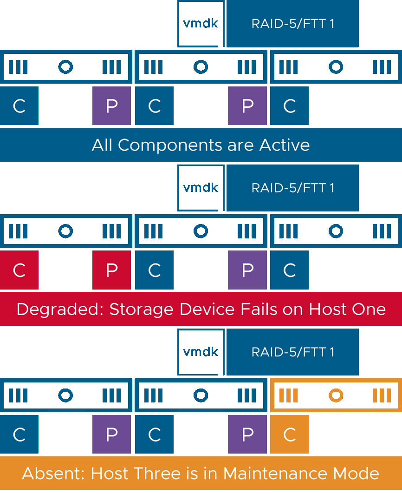
4.2 حالات الـ Objects | Object States
🧠 Object States — حالات الـ Objects
| الحالة | المَعنى |
|---|---|
| Healthy | كُلّ الـ Components نَشِطة. Policy مُمتَثِلة. |
| Reduced Availability (Active Rebuild) | Degraded component → إِعادة بِناء جارِية. |
| Reduced Availability (Delayed Timer) | Absent component → مُؤَقَّت 60 دَقيقة يَعمَل. |
| Reduced Availability (No Rebuild) | عُطل لَكِن لا مَوارِد لِإِعادة البِناء. |
| Inaccessible | لا يُمكِن الوُصول. VM مُعَلَّق. |
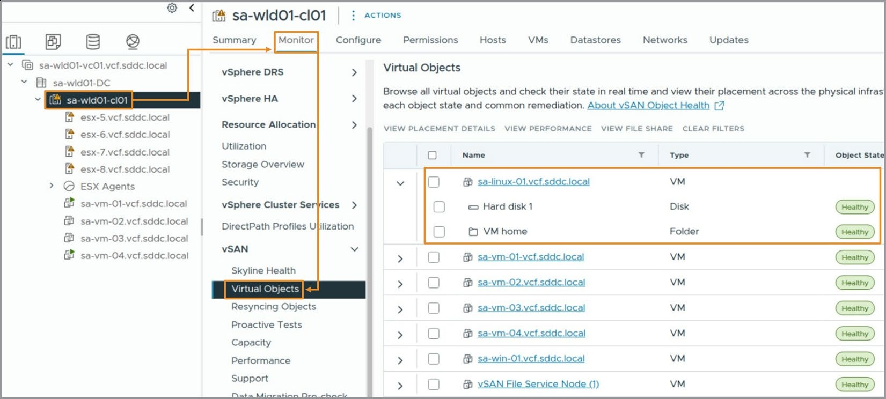
🧠 Object Health UI — مُراقَبة الصِّحّة
vSphere Client → vSAN → Monitor → Objects- عَرض تَفصيلي لِحالة كُلّ Object وَ component placement.
- الأَلوان: أَخضَر = healthy، أَصفَر = reduced، أَحمَر = inaccessible.
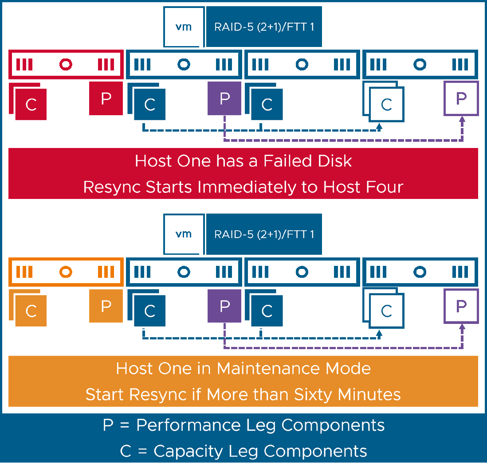
4.3 أَنواع الأَعطال | Outage Types
🧠 Outage Types — أَنواع الأَعطال
| النَّوع | التَّأثير | الاستِجابة |
|---|---|---|
| Planned (Maintenance Mode) | مُؤَقَّت — Host يُعاد تَشغيلُه. | Absent → 60 min timer. |
| Unplanned — Transient | مُؤَقَّت (reboot, network blip). | Absent → 60 min timer. |
| Unplanned — Permanent | فَشَل دائِم (disk died). | Degraded → immediate rebuild. |
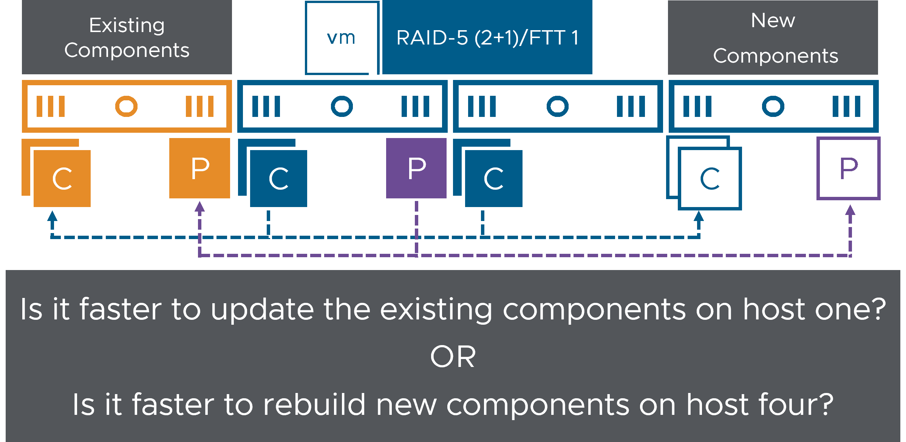
4.4 إِعادة المُزامَنة | Resynchronization
🧠 Resynchronization — إِعادة المُزامَنة
- Degraded → فَوري: يُنشِئ component جَديد وَيَنسَخ البَيانات مِن نُسخة سَليمة.
- Absent → 60 min: يَنتَظِر 60 دَقيقة قَبل إِعادة البِناء.
- يُمكِن تَقصير أَو إِلغاء المُؤَقَّت يَدَويّاً.
- خِيار "Repair Objects Immediately" — يَبدَأ فَوراً بِدون انتِظار.
- Faster Resync: في ESA، إِعادة المُزامَنة أَسرَع بِفَضل NVMe وَتَخطيطات RAID المُحَسَّنة.
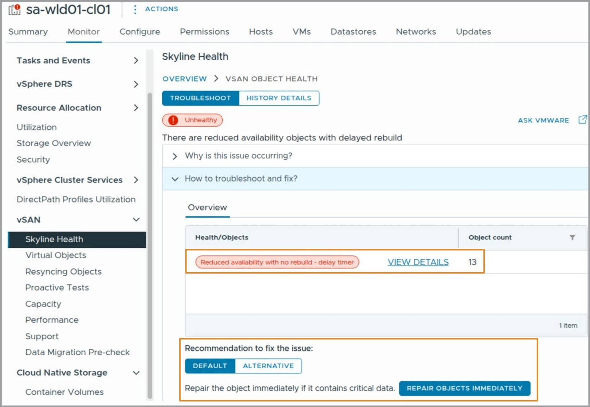
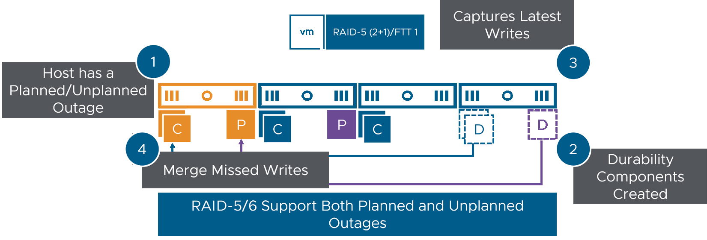
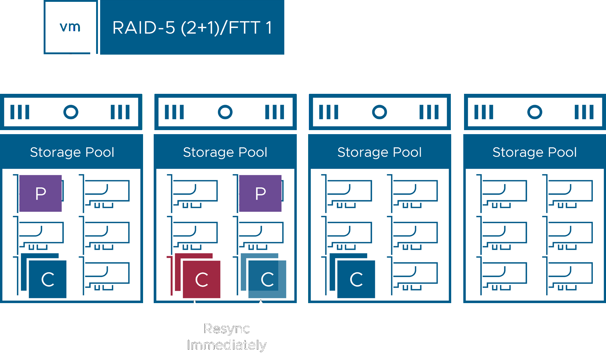
4.5 مُكَوِّنات المَتانة | Durability Components
🧠 Durability Components — مُكَوِّنات المَتانة
- عِندَما يُصبِح component Absent، vSAN يُنشِئ Durability Component.
- Durability Component يَلتَقِط الكِتابات الجَديدة فَقَط (لا يَنسَخ البَيانات القَديمة).
- حَجمُه صَغير مُقارَنة بِالنُّسخة الأَصليّة.
- يُستَخدَم لِدَمج البَيانات عِند عَودة الـ component الأَصلي أَو لِبِناء نُسخة كامِلة.
| نَوع RAID | Planned Outages | Unplanned Outages |
|---|---|---|
| RAID-5/6 | ✅ يُنشِئ Durability | ✅ يُنشِئ Durability |
| RAID-1 | ✅ يُنشِئ Durability | ❌ لا يُنشِئ Durability |
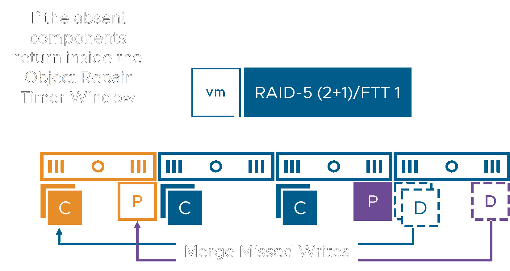
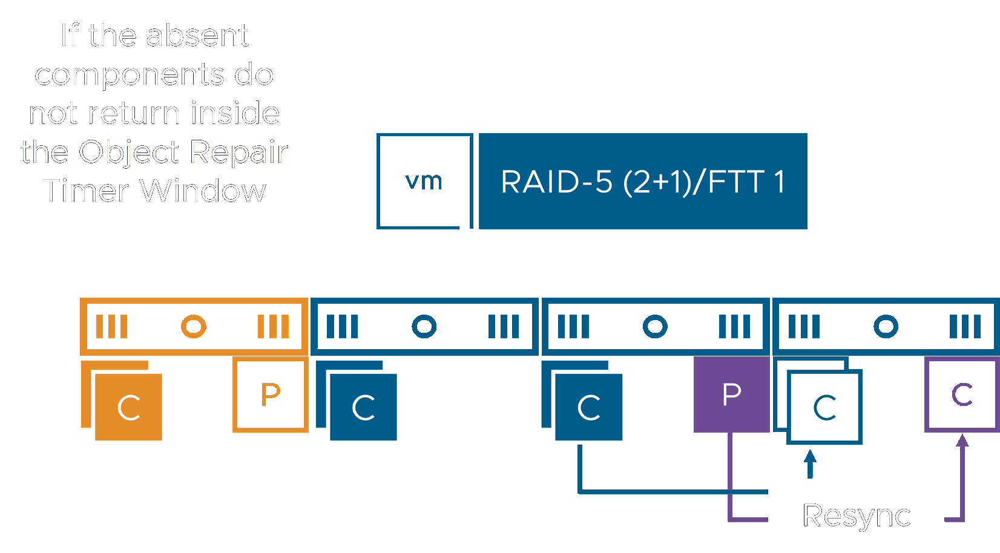
🧠 Durability Behavior — 3 سِيناريوهات
السِّيناريو 1: Component يَعود خِلال المُؤَقَّت
- Component الأَصلي يَعود → vSAN يَدمِج Durability Component مَعَه.
- أَسرَع مِن إِعادة بِناء كامِلة.
السِّيناريو 2: Component لا يَعود
- المُؤَقَّت يَنتَهي → vSAN يَبني components جَديدة كامِلة.
- يَستَخدِم البَيانات مِن Durability + Components السَّليمة.
السِّيناريو 3: Active يُفقَد + Absent يَعود
- Component نَشِط يَفشَل بَينَما Component غائِب يَعود.
- vSAN يَستَخدِم Component الغائِب (stale) + Durability Component لِاستِعادة البَيانات.
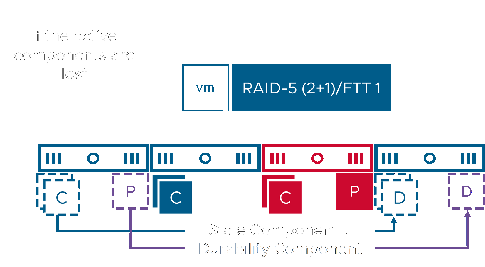
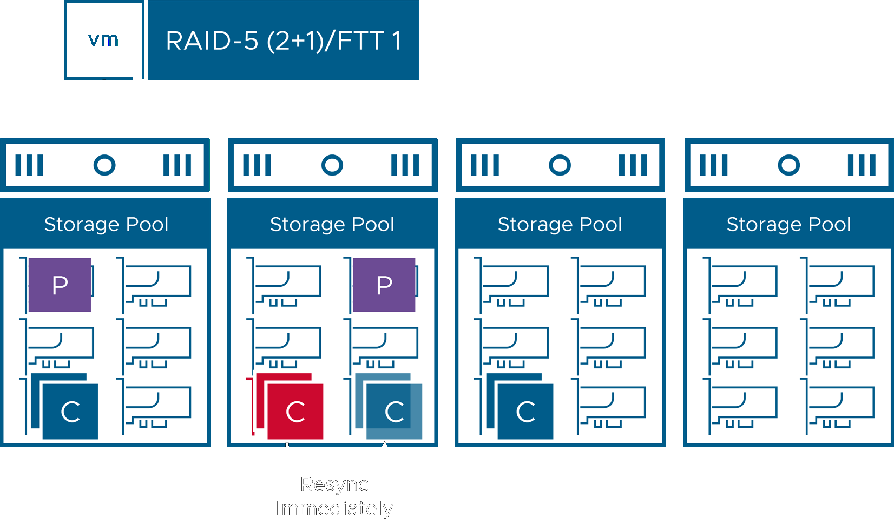
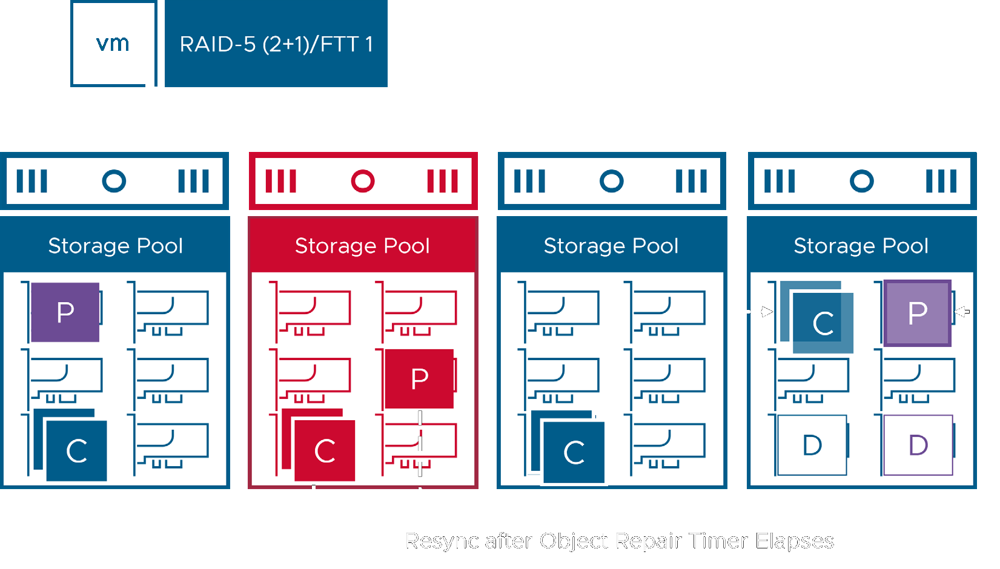
4.6 أَمثِلة عَمَليّة | Practical Examples
🧠 Degraded — مِثال فَشَل القُرص
- قُرص يَفشَل في Host → Components عَلى ذَلِك القُرص تُصبِح Degraded.
- vSAN يَبدَأ إِعادة بِناء فَوريّة عَلى أَقراص سَليمة.
- بَعد الاكتِمال → Object يَعود إِلى Healthy.
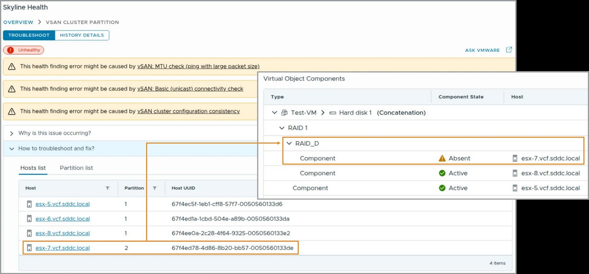
🧠 Absent — مِثال فَشَل Host
- Host يَفشَل → كُلّ Components عَلَيه تُصبِح Absent.
- مُؤَقَّت 60 دَقيقة يَبدَأ (
Object Repair Timer). - إِذا عاد Host خِلال 60 دَقيقة → دَمج (merge).
- إِذا لَم يَعُد → إِعادة بِناء كامِلة.
- Auto-rebalance عِند 80% مِن السِّعة المُستَخدَمة.
🧠 Network Partition Examples
مِثال 1: 4-Node RAID-5 Cluster
- 1 Host مَعزول → Objects تَبقى مُتاحة (3 hosts كافِية لِـ RAID-5).
- كُلّ الـ Hosts مَعزولة → Objects Inaccessible (لا quorum).
مِثال 2: 6-Node RAID-6 Cluster
- 2 Hosts مَعزولان → Objects تَبقى مُتاحة (4 hosts كافِية).
- 3 vs 3 partition → Inaccessible (لا أَغلَبيّة لِلـ quorum).
4.7 · Deep Dive Concept Cards — ما يَجِب أَن يَعرِفَه مُهَندِس المُرونة
المُرونة لَيسَت «ميزة» — هِيَ السَّبَب الرَّئيسي لِوُجود vSAN. هَذِه البِطاقات تَشرَح ما يَحدُث فِعليّاً عِند الأَعطال.
عِندَما يَغيب component (Absent)، vSAN لا يَبدَأ الإِصلاح فَوراً — يَنتَظِر 60 دَقيقة. السَّبَب: إِذا عادَ الـ host خِلال هَذِه الفَترة (reboot مَثَلاً)، يَكفي merge بَسيط بَدَل full rebuild.
- T=0: Host يَختَفي → components تَتَحَوَّل لِـ
Absent. Objects =Reduced Availability. - T=0 → T=60min: vSAN يَنتَظِر.
Durability Componentsتَلتَقِط الكِتابات الجَديدة. - إِذا عادَ قَبل 60min: Merge فَقَط — يُدمَج ما كُتِب أَثناء الغِياب. سَريع جِدّاً.
- إِذا لَم يَعُد بَعد 60min: Full Rebuild — يُعيد بِناء كُلّ الـ components عَلى hosts أُخرى.
- Repair Objects Immediately: يُمكِن تَجاوُز المُؤَقَّت يَدَويّاً (Maintenance Mode → Full data evacuation).
- «60 دَقيقة = البَيانات في خَطَر» — لا! Objects ما زالَت قابِلة لِلوُصول (Reduced Availability ≠ Inaccessible). لَكِن FTT الفِعلي أَقَلّ.
- «أُغَيِّر المُؤَقَّت لِ 5 دَقائِق» — مُمكِن لَكِن خَطير. Reboot عادي يَأخُذ 10+ دَقائِق. سَتُسَبِّب rebuilds غَير ضَروريّة.
Durability Components هِيَ components مُؤَقَّتة يُنشِئها vSAN لِالتِقاط الكِتابات الجَديدة أَثناء غِياب component أَصلي. تَضمَن أَنَّ لا بَيانات تُفقَد حَتّى أَثناء العُطل.
- RAID-5/6: Durability Components تَعمَل في كُلّ الأَعطال (Planned + Unplanned). هَذا لِأَنَّ erasure coding يَحتاج كُلّ الـ stripes لِلكِتابة.
- RAID-1: Durability Components تَعمَل في Planned فَقَط (Maintenance Mode). لِلأَعطال غَير المُخَطَّطة، النُّسخة الثانية كافية.
- عُطل يَحدُث: vSAN يُنشِئ Durability Component عَلى host آخَر.
- كِتابات جَديدة: تُخَزَّن في الـ Durability Component (بِالإِضافة لِلـ components الفَعّالة).
- العَودة (قَبل Timer): Merge — الكِتابات مِن Durability Component تُدمَج مَع الـ component الأَصلي.
- عَدَم العَودة (بَعد Timer): Full Rebuild — Durability Component يُصبِح جُزءاً مِن الإِصلاح الكامِل.
- بَعد الاِكتِمال: Durability Component يُحذَف — لا مِساحة ضائِعة.
VM عَلى RAID-5 (4+1). Host-C يَدخُل Maintenance Mode. vSAN يُنشِئ Durability Component عَلى Host-F. كُلّ كِتابة جَديدة تُسَجَّل هُناك. بَعد 30 دَقيقة يَعود Host-C → merge (دَقائِق). لَو لَم يَعُد → full rebuild (~1h+ حَسَب الحَجم).
Network Partition = مَجموعة مِن الـ hosts لا تَستَطيع التَّواصُل مَع مَجموعة أُخرى. كُلّ جانِب يَظُنّ أَنَّ الآخَر «مات». Quorum يُحَدِّد مَن يَفوز.
- الاِنقِسام: Switch failure أَو misconfiguration → hosts لا تَرى بَعضها.
- تَقييم Quorum: كُلّ جانِب يُحسِب عَدَد components + witnesses المُتاحة لَدَيه.
- الأَغلَبيّة تَفوز: الجانِب الَّذي يَملِك >50% أَصوات يَبقى Active لِلـ Object.
- الأَقَلّيّة: Objects تَصيرHere Inaccessible. VMs عَلى هَذا الجانِب تَتَجَمَّد (I/O pause).
- الإِصلاح: إِعادة الشَّبَكة → merge تِلقائي → objects تَعود Healthy.
RAID-5 (3+1) → 4 components + 1 witness = 5 أَصوات. اِنقِسام 2|2 → لا أَحَد لَديه أَغلَبيّة! الحَلّ: Witness عَلى host ثالِث أَو 5th component يُرَجِّح كَفّة. لِهَذا السَّبَب 5+ hosts مُوصى لِ RAID-5.
- تَصميم الشَّبَكة: 2× switches + LAG/LACP. لا single point of failure.
- عَدَد فَردي مِن hosts: يَضمَن أَنَّ جانِباً واحِداً دائِماً لَديه أَغلَبيّة.
- Stretched Cluster: لِلمَواقِع المُتَعَدِّدة، Witness في مَوقِع ثالِث.
4.8 Knowledge Check
Q1. A disk fails permanently. What is the component state?
Correct: C
Permanent failure = Degraded → immediate rebuild begins.
Q2. A host reboots unexpectedly. Component state becomes:
Correct: B
Transient outage (host reboot) = Absent → 60-minute timer starts.
Q3. How long is the Object Repair Timer?
Correct: B
Default Object Repair Timer is 60 minutes for Absent components.
Q4. RAID-1 creates Durability Components for:
Correct: B
RAID-1 creates Durability Components for planned outages only.
Q5. RAID-5/6 creates Durability Components for:
Correct: C
RAID-5/6 creates Durability Components for both planned and unplanned outages.
Q6. In Scenario 1, the absent component returns within the timer. What happens?
Correct: B
Component returns → vSAN merges Durability Component with it — faster than full rebuild.
Q7. In a 4-node RAID-5 cluster, if 1 host is network-partitioned:
Correct: B
3 remaining hosts are sufficient for RAID-5 — objects remain accessible.
Q8. In a 6-node RAID-6 cluster with a 3 vs 3 network partition:
Correct: B
3 vs 3 = no majority on either side → objects become inaccessible.
TK · صُندوق أَدَوات مُهَندِس التَّخزين | The VCF Storage Practitioner's Toolkit
🧠 Learning Objectives — أَهداف الوَحدة
- تَملِك مَكتَبة Runbooks جاهِزة لِكُلِّ عَمَليّة تَخزين شائِعة.
- تَفهَم Anti-Patterns الَّتي يَقَع فيها مَن لَم يَمُرّ بِالألَم.
- تَحسِب Capacity Planning بِأَرقام، لا تَخمين.
- تَجهَز لِمُقابَلات Storage Admin بِأَسئِلَة حَقيقيّة.
TK.1 · vSAN ESA Host Onboarding Runbook
Phase 1 — التَّحَقُّق المُسبَق (Pre-Flight Checks)
- تَأَكَّد أَنَّ الـ Host
vSAN ESA ReadyNodeمُعتَمَد في الـ HCL (broadcom.com/vmware/hcl). - تَحَقَّق مِن المُواصَفات الدُّنيا: NVMe SSDs فَقَط، 128GB+ RAM، 25GbE+ NICs، CPU مَع AES-NI.
- تَأَكَّد مِن firmware versions:
NVMe،NIC،BIOS— يَجِب أَن تُطابِق الـ HCL بِالضَّبط (لَيس "قَريب مِنها"). - اِفحَص الـ Cluster مِساحة مُتاحة ≥30% لِأَنَّ إِضافَة Host تُطلِق rebalance.
- تَحَقَّق مِن vSAN Skyline Health أَخضَر بالكامِل قَبل البَدء.
Phase 2 — إِعداد الشَّبَكة
- أَنشِئ
vSAN VMkernel Portمَع MTU 9000 عَلى الـ VDS الصَّحيح. - اِختَبِر connectivity:
vmkping -d -s 8972 -I vmk1 <vSAN-IP-of-existing-host>. لا يَنجَح؟ مُشكِلة MTU في الـ Switch. - تَحَقَّق مِن NIOC shares: vSAN ≥ 100 shares (High).
- اِفصِل vSAN traffic عَلى uplinks مُخَصَّصة إِن أَمكَن.
Phase 3 — الإِضافة
- أَضِف الـ Host لِلـ Cluster:
vCenter → Cluster → Add Host(أَو SDDC Manager في VCF). - Claim disks:
vSAN → Disk Management → Claim Disks → Storage Pool(في ESA كُلُّ القُروص في Pool واحِد). - تَأَكَّد مِن إِظهار الـ Host في Cluster Capacity view بِالحَجم الصَّحيح.
Phase 4 — بَعد الإِضافة
- راقِب Resync progress:
vSAN → Resyncing Objects— قَد يَستَغرِق ساعات. - تَحَقَّق مِن compliance:
VM Storage Policies → Check Compliance. - اِنتَظِر 24h لِلـ Adaptive RAID rebalance إِذا تَجاوَزت host count threshold (مَثَلاً 6→7 hosts).
- تَأَكَّد Skyline Health أَخضَر بالكامِل.
- وَثِّق الإِضافة في CMDB: Serial، Service Tag، Drive Models، MAC Addresses.
🧠 وَقت تَقديري
Pre-flight: 1-2 ساعات. Installation + Add: 2-3 ساعات. Resync كامِل: 4-24 ساعة حَسَب الحَجم. الإِجمالي: يَوم كامِل لِـ host واحِد.
TK.2 · NVMe Disk Replacement Playbook
Phase 1 — التَّشخيص
- تَحَقَّق مِن
vSAN Health → Physical Disks → Disk Health. حَدِّد القُرص الفاشِل بِـ Serial Number. - لاحِظ حالة الـ components عَلى القُرص:
Degraded(فَشَل دائِم — vSAN بَدَأ الإِصلاح فَوراً) أَوAbsent(مُؤَقَّت — vSAN يَنتَظِر 60 دَقيقة). - اِفحَص esxcli logs:
esxcli vsan storage listلِمَعرِفَة device path. - تَحَقَّق مِن أَنَّ Cluster لَدَيه مِساحة كافية لِإِعادة بِناء البَيانات في مَكان آخَر.
Phase 2 — الإِزالة الآمِنة
- ⚠ لا تَسحَب القُرص قَبل التَّأكيد! سَحب قُرص لا يَزال مَفعَّلاً = فَقد بَيانات.
- اِنتَظِر اِكتِمال الإِصلاح:
vSAN → Resyncing Objects = 0. - في vCenter:
vSAN → Disk Management → Select Disk → Remove Disk → Evacuate Data(إِذا لَم يَكُن أَوتوماتيكيّاً). - اِنتَظِر evacuation (ساعات حَسَب الحَجم — رُبَّما 4-8 ساعات لِـ 3.84TB).
- تَأَكَّد مِن إِزالة القُرص مِن vSAN قَبل السَّحب الفِعلي.
Phase 3 — الاِستِبدال الفيزيائي
- اِسحَب القُرص الفاشِل (Hot-Pluggable في كُلِّ ReadyNodes الحَديثة).
- أَدخِل القُرص الجَديد — يَجِب أَن يَكون نَفس الـ Model أَو مِن نَفس HCL tier.
- تَحَقَّق مِن firmware القُرص الجَديد — حَدِّثه إِذا لَزِم قَبل المُتابَعة.
Phase 4 — إِعادة الإِدخال
- vSAN يَكشِف القُرص الجَديد تِلقائيّاً. تَحَقَّق:
vSAN → Disk Management. - Claim القُرص:
Claim → Storage Pool. - راقِب rebalance: vSAN يُعيد تَوزيع البَيانات تِلقائيّاً.
- تَأَكَّد بَعد 24 ساعة مِن Skyline Health أَخضَر.
- وَثِّق الاِستِبدال: Serial القَديم، الجَديد، السَّبَب (Vendor RMA reference).
⚠ Anti-Pattern: السَّحب الفَوري
"القُرص فاشِل، سَأَسحَبُه فَوراً." لا. إِذا كان Absent فَقَط (مُؤَقَّت)، vSAN يَنتَظِر 60 دَقيقة. سَحبُه يُحَوِّل المُشكِلة المُؤَقَّتة إِلى دائِمة وَيُطلِق rebuild كامِل بِلا داعٍ.
TK.3 · Storage Policy Template Library
كُلُّ مُؤَسَّسة تَحتاج مَجموعة مَعياريّة مِن Storage Policies. هَذا القالَب يُلَخِّص الحَدّ الأَدنى المَطلوب لِأَيّ بَيئة Production:
=== STORAGE POLICY TEMPLATE LIBRARY — VCF 9.0 === ═════════════════════════════════════════════════════ POLICY 1: Default-Mission-Critical ═════════════════════════════════════════════════════ Use Case : Production DBs، Tier-1 Apps FTT : 2 (لِتَحَمُّل فَشل host-ين مَعاً) FTM : RAID-1 (Mirror) Stripe Width : 1 (default) IOPS Limit : Unlimited Force Provisioning: NO Encryption : ON Min Hosts Required: 5 ═════════════════════════════════════════════════════ POLICY 2: Default-Production ═════════════════════════════════════════════════════ Use Case : عام Production (web، app servers) FTT : 1 FTM : RAID-5 (Erasure Coding 4+1) Stripe Width : 1 IOPS Limit : Unlimited Force Provisioning: NO Encryption : ON Min Hosts Required: 5 (4 data + 1 parity) Space Efficiency : 80% usable (vs 50% لِـ RAID-1) ═════════════════════════════════════════════════════ POLICY 3: Default-Dev-Test ═════════════════════════════════════════════════════ Use Case : Dev/Test/UAT FTT : 1 FTM : RAID-5 Stripe Width : 1 IOPS Limit : 5000 (لِمَنع dev مِن إِغراق Production traffic) Force Provisioning: YES (السَّماح حَتّى مَع نَقص hosts) Encryption : OFF (تَوفير CPU) Min Hosts Required: 5 ═════════════════════════════════════════════════════ POLICY 4: High-Performance-NoTolerance ═════════════════════════════════════════════════════ Use Case : Scratch space، Temp files، Caches FTT : 0 (لا تَحَمُّل أَعطال — البَيانات قابِلة لِلإِنشاء) FTM : N/A Stripe Width : 4 (Striped لِأَقصى أَداء) IOPS Limit : Unlimited Force Provisioning: YES Encryption : OFF WARNING : فَشل host = فَقد البَيانات! ═════════════════════════════════════════════════════ POLICY 5: Archive-Cold-Data ═════════════════════════════════════════════════════ Use Case : Backups، Archives، Compliance copies FTT : 2 FTM : RAID-6 (Erasure Coding 4+2) Stripe Width : 1 IOPS Limit : 1000 (لا حاجة لِأَداء عالٍ) Force Provisioning: NO Encryption : ON (مَطلوب لِلـ compliance) Min Hosts Required: 6 (4 data + 2 parity) Space Efficiency : 67% usable ═════════════════════════════════════════════════════ POLICY 6: VCSA-Management ═════════════════════════════════════════════════════ Use Case : vCenter VCSA، NSX Managers، Aria FTT : 1 FTM : RAID-1 (سُرعة استِعادة أَهَمّ مِن المِساحة) Stripe Width : 1 IOPS Limit : Unlimited Reservation : 100% Space Reserved Encryption : ON Note : Management infrastructure حَرِجة جِدّاً === END LIBRARY ===
قاعِدة: أَنشِئ هَذِه السِّياسات قَبل أَيّ VM. اِجعَل Default Policy لِكُلِّ Datastore = "Default-Production". اِنحَرِف عَنها فَقَط بِسَبَب مُوَثَّق.
TK.4 · Capacity Planning Worksheet
قَبل أَن تَبني vSAN Cluster، أَجِب على هَذِه الأَسئِلة بِأَرقام، لا تَخمين:
- كَم VM مُتَوَقَّع في 1 سَنَة؟ 3 سَنَوات؟
- مُتَوَسِّط حَجم VM (Storage)؟ مَثَلاً 100 GB.
- مُعَدَّل النُّمو السَّنَوي المُتَوَقَّع؟ (20%، 50%، 100%؟)
- هَل هُناك VMs كَبيرة (DBs > 1 TB)؟ تَحتاج Stripe-Width مُختَلِف.
- FTT المَطلوب: 1 (Standard)، 2 (Mission Critical)؟
- FTM: RAID-1 (سُرعة)، RAID-5 (تَوازُن)، RAID-6 (مِساحة)؟
- هَل هُناك Compliance يَتَطَلَّب Encryption؟
- هَل هُناك Stretched Cluster بَين Sites؟
=== vSAN ESA Capacity Math === ASSUMPTIONS: • 100 VMs × 100 GB Provisioned = 10 TB Provisioned • Thin Provisioning ratio: 60% (الواقِع typically 50-70%) • Actual Storage = 10 TB × 0.6 = 6 TB • Slack Space (vSAN reserved) = 20% → 7.2 TB • Growth buffer (1 year) = 30% → 9.4 TB FTM OVERHEAD: RAID-1 (FTT=1): 2x → need 18.8 TB raw RAID-5 (FTT=1): 1.25x → need 11.75 TB raw RAID-6 (FTT=2): 1.5x → need 14.1 TB raw HOST COUNT (RAID-5, 6×NVMe per host): Need 11.75 TB raw → ~12 TB Per host: 6 × 3.84 TB = 23 TB raw Hosts needed: 1 → BUT minimum 5 for RAID-5! Decision: 5 hosts × 4 × 3.84 TB = 76.8 TB raw (مِساحة كَبيرة، لَكِنَّ host count تُحَدِّد لا Capacity) THRESHOLDS: 🟢 0-70% : عادي 🟡 70-80% : ابدَأ تَخطيط التَّوسِعة 🔴 80%+ : vSAN يَبدَأ Auto-Rebalance — الأَداء يَنخَفِض ⛔ 92%+ : vSAN يَرفُض كِتابات جَديدة — VMs تَتَجَمَّد
| المُكَوِّن | المُواصَفة |
|---|---|
| Hosts | 6 × Dell PowerEdge R760 (vSAN ESA ReadyNode) |
| CPU | 2 × Intel Xeon Gold 6438Y+ (32C / 64T each) |
| RAM | 512 GB DDR5 ECC |
| NVMe | 6 × 3.84 TB Gen4 NVMe (TLC) |
| NICs | 2 × 100 GbE Mellanox ConnectX-6 |
| Boot | 2 × 480 GB M.2 (BOSS-N1 mirror) |
| Raw Capacity | 138 TB |
| Usable (RAID-5) | ~110 TB |
| Safe Usable (70%) | ~77 TB |
TK.5 · vSAN Health Troubleshooting Decision Tree
عِندَما Skyline Health يَظهَر أَصفَر/أَحمَر، اِتبَع هَذا التَّسَلسُل:
Layer 1: Network Health
- اِفحَص vSAN VMkernel ping بَين كُلِّ pair مِن hosts:
vmkping -d -s 8972 -I vmk1 <target>. - اِفحَص MTU: vSAN يَتَطَلَّب 9000 — أَيّ host بِـ 1500 = مَشكَلة كُبرى.
- اِفحَص NIOC: vSAN saturated بِسَبَب vMotion يَأكُل bandwidth؟
- 80% مِن مَشاكِل vSAN جَذرُها في الشَّبَكة.
Layer 2: Disk Health
- Skyline → Physical Disks → اِبحَث عَن أَيّ disk بِـ status غَير Healthy.
- اِفحَص SMART data:
esxcli vsan storage list. - راقِب write endurance: NVMe TBW قَريب مِن النِّهاية؟
- إِذا disk في Degraded → rebuild يَجري، اِنتَظِر.
Layer 3: Object Health
- اِفحَص:
vSAN → Virtual Objects → Object Health. - أَيّ object في حالة
Reduced AvailabilityأَوInaccessible؟ - إِذا object inaccessible → VM لا تَستَطيع الـ I/O — فُقدان حَقيقي.
- راجِع
vSAN → Resyncing Objects— كَم وَقت مُتَبَقّي؟
Layer 4: Cluster Configuration
- اِفحَص Cluster Partition: هَل كُلُّ hosts تَرى بَعضها؟
- اِفحَص Disk Format Version: هَل كُلُّ hosts نَفس الإِصدار؟
- اِفحَص Configuration Consistency.
Layer 5: Performance
- Aria Operations → vSAN → Performance Charts.
- Backend Latency > 10ms = مَشكَلة.
- Write Buffer fill rate مُرتَفِع = vSAN لا يَلحَق بِالكِتابات.
- Congestion في الـ DOM Owner؟
🧠 قاعِدة 80/20
80% مِن مَشاكِل vSAN في الشَّبَكة أَو أَخطاء تَكوين. اِبدَأ هُناك. الـ Disks الفاشِلة فِعلاً نادِرة في NVMe Enterprise.
TK.6 · vSAN Patching Playbook
T-14 days · التَّخطيط
- راجِع VMware Security Advisories لِـ vSAN.
- اِفحَص Release Notes — أَيّ KB warnings لِـ ESA/OSA؟
- تَحَقَّق مِن On-Disk Format compatibility (هَل يَحتاج upgrade لِـ disk format بَعد patch؟).
- اِفتَح Change Request.
T-7 days · الاِختِبار
- Apply Patch عَلى Test Cluster.
- اِترُك أُسبوعاً مُراقَبة.
- راقِب: Skyline Health، vSAN Performance Charts، VM Latency.
T-1 day · الاِستِعداد
- تَأَكَّد Backup ناجِح (Production VMs).
- تَأَكَّد Cluster في Healthy State: لا Resync نَشِط، لا Components في Degraded.
- تَأَكَّد مِن سَعة كافِية: على الأَقَلّ 30% Free لِأَنَّ patching يَحتاج evacuation.
- تَأَكَّد DRS مُمَكَّن — VMs تَنتَقِل تِلقائيّاً.
T-0 · التَّنفيذ
- Pre-check vLCM.
- Remediation Mode: Ensure Accessibility (الأَسرَع، الافتِراضي) أَو Full Data Migration (أَكثَر أَماناً، أَبطَأ).
- Rolling host upgrade. كُلُّ host يَأخُذ ~60-90 دَقيقة.
- إِذا host واحِد فَشَل، أَوقِف وَ حَلِّل.
- لا تَدخُل host إِلى Maintenance Mode بِدون Evacuate Data إِذا FTT=0 — VMs ستَفقِد البَيانات.
T+1 · ما بَعد التَّنفيذ
- تَأَكَّد كُلُّ hosts عَلى نَفس Build.
- اِفحَص Compliance.
- اِفحَص Skyline Health.
- إِذا كانَ Disk Format Upgrade مَطلوب → نَفِّذ في Window مُستَقِلّ.
⚠ Anti-Pattern: "Maintenance Mode = Ensure Accessibility دائِماً"
Ensure Accessibility يَترُك component واحِد عَلى host تَحت patch. إِذا host آخَر فَشَل أَثناء الـ patch، VMs قَد تَفقِد accessibility. لِـ Mission-Critical: اِستَخدِم Full Data Migration رَغم أَنَّه أَبطَأ.
TK.7 · Top 10 vSAN Anti-Patterns
1. The Mixed-Vendor Cluster
"سَنُضيف Dell host إِلى Cluster مِن HPE hosts." لا. vSAN يَدعَم mixing مِن نَفس Vendor فَقَط. اِلتَزِم بِـ HCL بِالضَّبط.
2. The OSA-to-ESA "Migration"
"سَنَنقُل Cluster مِن OSA إِلى ESA in-place." لا يُمكِن. ESA يَتَطَلَّب NVMe-only، policies مُختَلِفة، architecture مُختَلِف. التَّحَوُّل = Cluster جَديد + vMotion / Storage vMotion لِلـ VMs.
3. The "Free Space Forever" Assumption
"vSAN يَعرِض 80TB free، اِملأها." لا. vSAN يَحتاج 20-30% slack space لِلعَمَل. 80% الفِعلي = أَزمة.
4. The MTU Mismatch
"VDS = 9000، Switches = 1500." vSAN traffic سَيَفشَل بِصَمت. Performance terrible، رَغم أَنَّ Health قَد يَظهَر OK مَبدَئيّاً.
5. The Shared Network Catastrophe
"vSAN + Management + vMotion + VM traffic كُلُّها عَلى نَفس uplinks." Saturation تُؤَدّي إِلى host isolation events. اِفصِلها.
6. The Policy-Free Cluster
"كُلُّ VM عَلى Default Policy." لا. Mission-Critical تَحتاج FTT=2، Dev يَحتاج Force Provisioning، Archives تَحتاج RAID-6. Policies لَيست اِختِيارِيّة.
7. The Snapshot Hoarder (vSAN Edition)
Snapshots عَلى vSAN تَستَهلِك مِساحة بِسُرعة — كُلُّ snapshot يُنشِئ delta object. أَكثَر مِن 24 ساعة عُمر = خَطَر.
8. The Force Provisioning Abuser
"Force Provisioning ON لِكُلِّ شَيء — لِنَتَجَنَّب أَخطاء deployment." VMs تَعمَل بِـ FTT أَقَلّ مِن المَطلوب بِدون عِلمك. كارِثة عِند الفَشَل.
9. The "vSAN = Backup" Belief
"vSAN يَحمي بَياناتي بِـ FTT=2، لا حاجَة لِـ Backup." لا. FTT يَحمي مِن فَشَل Hardware، لَيس مِن Ransomware، خَطَأ بَشَري، أَو فَساد البَيانات المَنطِقي.
10. The Firmware Skipper
"Firmware لِلـ NVMe يَعمَل، لِماذا أُحَدِّث؟" Firmware bugs في NVMe السَّبَب الأَوَّل لِفَشَل الأَقراص الـ "غَير مُتَوَقَّع". تابِع Vendor advisories.
TK.8 · Storage Admin Interview Prep
Technical (Concepts)
- اِشرَح الفَرق بَين
vSAN OSAوَvSAN ESA. مَتى تَختار كُلَّ واحِد؟ - ما الفَرق بَين
FTTوَFTM؟ كَم host تَحتاج لِكُلِّ FTM؟ - اِشرَح
SPBM— كَيف يَعمَل التَّقدير وَالتَّطبيق؟ - ما الفَرق بَين
Datastore VMFSوَvSAN DatastoreوَNFS؟ - اِشرَح RAID-1 vs RAID-5 vs RAID-6 في vSAN ESA — اِنعِكاسات الأَداء وَالمِساحة.
- كَيف يَعمَل Resync في vSAN؟ مَتى يُطلَق؟
- ما هُوَ
Witnessفي Stretched Cluster؟
Operational (Real Work)
- vSAN Cluster بَدَأ بِـ alerts «Disk Latency Above 30ms». كَيف تُحَلِّل؟
- Host لا يَخرُج مِن Maintenance Mode رَغم Evacuation. ما الأَسباب؟
- VM في حالة
Inaccessibleرَغم أَنَّ Cluster يَبدو Healthy. ما العَمَل؟ - Skyline Health أَخضَر، لَكِنَّ VMs بَطيئة. كَيف تَبحَث؟
- كَيف تَتَعامَل مَع disk فاشِل في 3am call؟
Architectural (Design Thinking)
- عَميل عِندَه 200 VMs، يَحتاج HA + Performance. كَيف تُصَمِّم vSAN Cluster؟
- كَيف تَختار بَين OSA وَ ESA لِعَميل جَديد؟
- عَميل يُريد Stretched Cluster — ما المُتَطَلَّبات؟ ما الـ Trade-offs؟
- كَيف تُخَطِّط لِـ DR Site مَع vSAN؟
- عَميل يُريد Capacity Tiering — كَيف تَتَعامَل في ESA؟
Behavioral
- اِخبِرني عَن أَكبَر مَشكَلة Storage تَعامَلت مَعَها — ماذا تَعَلَّمت؟
- اِخبِرني عَن قَرار اِخْتَلَفت فيه مَع Architect — كَيف حَلَلتَه؟
- كَيف تَبقى مُحَدَّثاً مَع vSAN roadmap؟
🧠 Interview Wisdom
أَفضَل إِجابة لِسُؤال Storage: «ما هُوَ الـ Workload؟ ما هُوَ SLA؟ ما هِيَ القُيود التِّجارِيّة؟». الـ Junior يَقفِز لِلحَلّ. الـ Senior يَسأَل قَبل أَن يُجيب.
TK.9 · Daily / Weekly / Monthly Storage Checklist
| التَّكرار | المُهِمّة | كَيف |
|---|---|---|
| Daily | راجِع Skyline Health | أَوَّل شَيء صَباحاً |
| راجِع vSAN Capacity | تَأَكَّد <70% utilization | |
| راجِع Resyncing Objects | يَجِب أَن يَكون 0 (إِلّا إِذا تَمّ تَغيير شَيء) | |
| راجِع Performance Anomalies | Aria Operations alerts | |
| Weekly | اِفحَص On-Disk Format compliance | كُلُّ hosts نَفس الإِصدار |
| اِفحَص Storage Policies Compliance | كُلُّ VMs Compliant | |
| راجِع Capacity Trend | نُمو طَبيعي أَم spike؟ | |
| اِحذِف Snapshots > 7 أَيّام | اِفحَص Storage → اِبحَث snapshots | |
| Monthly | Patch Cluster | اِتبَع TK.6 |
| Test Restore (Backup) | VM عَشوائيّة لِـ Test env | |
| راجِع Capacity Plan | هَل تَحتاج hosts إِضافيّة؟ | |
| اِفحَص Firmware advisories | Dell/HPE/Lenovo dashboards | |
| Quarterly | Disk health audit | SMART data، write endurance |
| راجِع Storage Policies | هَل ما زالَت مُناسِبة لِلـ workload؟ | |
| اِختَبِر Stretched failover (إِن وُجِد) | Failover test | |
| Yearly | تَحديث Documentation | Architecture، Runbooks |
| راجِع Storage Vendor Roadmap | Broadcom TAM meeting |
TK.10 · A Day in the Life of a vSAN Admin
- 08:00 — قَهوة. Skyline Health dashboard — لا alerts. Capacity: 68% — OK.
- 08:15 — Stand-up مَع Team.
- 08:30 — Ticket: "VM-DB-PRD-04 بَطيئة." اِبدَأ TK.5 troubleshooting tree.
- 09:30 — Found: vSAN Backend Latency = 25ms. اِكتَشَفت Resync جارٍ مِن disk replacement أَمس. اِنتَهَى خِلال 2 ساعة.
- 10:00 — Capacity Review meeting. نَناقِش شِراء 2 hosts إِضافِيّة في Q3.
- 11:00 — Project: تَصميم Storage Policy جَديد لِـ Tenancy جَديد (Microservices). اِفتَح TK.3 template.
- 12:30 — Lunch.
- 13:30 — Ticket: Developer يَحتاج Datastore جَديد لِـ Sandbox. اِنشَأ Storage Policy "Sandbox-Disposable" (FTT=0, RAID-0).
- 14:30 — Patch planning مَع Network team — Window الجُمعَة 22:00.
- 15:30 — Documentation: تَوثيق disk replacement مِن أَمس.
- 16:30 — Review tomorrow's calendar.
- 17:00 — أَغلِق Laptop.
🧠 ما يَكشِفه هَذا اليَوم
- vSAN Admin يَعمَل 25% Troubleshooting، 35% Planning/Design، 20% Patching/Maintenance، 20% Communication/Documentation.
- Capacity Planning أَهَمّ مِن أَيّ شَيء آخَر في vSAN. تَجاهُلُه = أَزمة في 6 شُهور.
- أَقَلَّ مِن 15٪ مِن اليَوم في CLI/UI. الباقي Planning وَ Documentation.
SC · سيناريوهات حَقيقيّة مِن DataCenter | Real-World Storage Scenarios
🧠 Learning Objectives — أَهداف الوَحدة
- تَرى كَيف تَتَرابَط Policies، Resiliency، Capacity في مَشروع حَقيقي.
- تَفهَم القَرارات تَحت ضَغط الوَقت وَالمَوارِد.
- تَتَعَلَّم تَحويل لُغة الأَعمال إِلى قَرارات تِقَنيّة.
- تَكتَسِب حِسّ مَتى تَختَصِر، وَمَتى تُعَمِّق.
SC.1 · Greenfield vSAN Cluster Build
الخَلفيّة: شَركة خَدَمات مالِيّة، عِندَها Primary DataCenter ناضِج، لَكِنَّ DR Site قَديم عَلى SAN تَقليدي. الـ CISO طَلَب DR Site جَديد عَلى vSAN ESA يَحتَمِل 250 VM. الجَدوَل: 60 يَوم. الـ CFO يُريد «لا مُفاجَآت في الميزانيّة».
الخَطَأ الشّائِع
❌ Admin ضَعيف
- يُكَرِّر بِنية Primary حَرفِيّاً.
- يَختار OSA لِأَنَّه "مَعروف".
- يَنسى Witness في Stretched.
- يَتَجاهَل Network design — "سَنَتَدَبَّر".
- Storage Policies تُنشَأ بَعد deployment.
✅ Admin مُحتَرِف
- يَبدَأ بِـ TK.4 Capacity Worksheet.
- يَختار ESA — DR موقِع جَديد، لا legacy.
- يُصَمِّم Stretched بِكامِل المُتَطَلَّبات.
- Network design قَبل أَيّ شِراء.
- Storage Policies جاهِزة قَبل host واحِد.
Week 1-2: Planning & Architecture
- Capacity Plan: 250 VMs × 100GB avg × 50% thin = 12.5TB actual. + 30% growth + RAID-5 overhead = ~22TB needed.
- Reference Architecture: 6 × Dell R760 vSAN ESA ReadyNode، 6 × 3.84TB NVMe per host.
- Network Design: 2 × 100 GbE per host، dedicated vSAN VLAN، MTU 9000، LACP عَلى Switches.
- Storage Policies: 6 policies جاهِزة (مِن TK.3 template).
- Licensing: VVF Pack لِـ 6 hosts × 32 cores = 192 cores.
- PO submission: Hardware delivery خِلال 21 يَوم.
Week 3-5: Hardware Receive & Rack
- Receive & inspect: تَحَقَّق مِن كُلِّ NVMe drives مُطابِق لِلـ HCL.
- Rack: 6 hosts × 2U = 12U.
- Cabling: Power dual feed، 100 GbE LACP إِلى Top-of-Rack switches.
- BIOS/Firmware update — تَحديث ضَروري قَبل ESX install.
- iDRAC configuration.
Week 6: ESX Installation
اِتبَع Compute course TK.1 (Host Onboarding) لِكُلِّ host. 6 hosts في يَومَين.
Week 7: vCenter + vSAN Cluster Build
- Deploy VCSA 9.0 على Host #1 (Bootstrap).
- اِنشِئ Datacenter وَ Cluster.
- Add باقي Hosts.
- Configure VDS، VMkernels (Management، vMotion، vSAN، NSX TEP).
- Configure vSAN:
Cluster → Configure → vSAN → Enable. - Claim Disks: كُلُّ NVMe في Storage Pool.
- تَفعيل Deduplication + Compression.
- تَفعيل Encryption (KMS مُتَكامِل).
Week 8: Storage Policies + Validation
- Policy Application — اِنشِئ كُلَّ Storage Policies مِن TK.3.
- VM Provisioning — Deploy test VM مَع كُلِّ Policy.
- Failure Test — أَوقِف Host فَجأة. تَأَكَّد Resync تِلقائي.
- Performance Benchmark — HCIBench: IOPS، Latency، Throughput.
- Network Failover Test — اِفصِل uplink واحِد. NIOC handles.
- Disk Pull Test — اِسحَب NVMe (بِحَذَر!) — تَأَكَّد Auto-Recovery.
Week 9: First Production VMs (Pilot)
- اِبدَأ بِـ low-criticality VMs (Internal Wiki، Test).
- راقِب لِأُسبوع كامِل: Skyline Health، Performance، Backup.
- إِذا OK، اِبدَأ Migration Plan لِبَقيّة VMs.
القَرار المِعماري المِفتاحي
المُشكِلة: Stretched Cluster بَين Primary وَ DR، أَو Standard Cluster في DR فَقَط مَع Async Replication؟
القَرار: Stretched Cluster.
- RTO = 0 لِـ Critical VMs.
- RPO = 0 (Synchronous).
- Witness في Site ثالِث (Cloud).
الـ Trade-off: Network latency < 5ms بَين Sites مَطلوب. تَكلِفة dark fiber.
الـ Mitigation: Tier-1 فَقَط عَلى Stretched. Tier-2 عَلى Standard Replication.
الدُّروس المُستَفادة
- Storage Policies قَبل VMs. Build وَ Test سياسات قَبل أَوَّل VM.
- HCIBench قَبل Production. اِعرِف حُدودك قَبل أَن تَكتَشِفها VMs.
- Witness في Site ثالِث. لَيس في Primary، لَيس في DR — مَكان مُحايِد.
- Reference Architectures مَوجودة لِسَبَب. لا تُعيد اِختِراع العَجَلة.
SC.2 · SAN-to-vSAN Migration
الخَلفيّة: شَركة طَيران، 4 vSphere Clusters، 800 VM، 60 TB، عَلى Dell EMC PowerStore (SAN). End-of-Life خِلال 9 شُهور. الإِدارة قَرَّرَت التَّحَوُّل إِلى vSAN ESA لِتَخفيض Footprint وَتَوحيد Storage مَع Compute.
التَّحَدّيات
- Downtime: Production لا يَتَحَمَّل أَكثَر مِن 2 ساعة لِكُلِّ VM.
- Mixed Workloads: Databases، Web، CAD/CAM، Analytics.
- Skills: Team لَم يَعمَل مَع Storage Policies سابِقاً.
- Network: SAN على Fibre Channel، vSAN على Ethernet — نَحتاج تَأهيل Switches.
- Capacity: vSAN ESA cluster الجَديد يَجِب أَن يَعمَل بِالتَّوازي مَع SAN حَتّى نِهاية Migration.
الاِستِراتيجيّة — Wave-Based
تَجَنَّباً لِـ Big-Bang، نَنقُل VMs على 4 موجات. كُلُّ موجة تَتَعَلَّم مِن السّابِقة.
| Wave | Workload Type | VM Count | الجَدوَل |
|---|---|---|---|
| 1 | Dev / Test (lowest risk) | 150 | Month 1-2 |
| 2 | UAT / Staging | 200 | Month 3 |
| 3 | Production Tier-2 (Web، Apps) | 300 | Month 4-5 |
| 4 | Production Tier-1 (DBs، CAD/CAM) | 150 | Month 6 |
Month 1-2: Wave 1 — Dev/Test
- Build vSAN ESA Cluster الجَديد (مِن SC.1 above).
- Storage vMotion VMs (live) مِن SAN datastore إِلى vSAN datastore.
- كُلُّ VM يَأخُذ 10-30 دَقيقة حَسَب الحَجم.
- أَهَمّ شَيء: apply Storage Policy لِكُلِّ VM بَعد النَّقل.
- راقِب: Performance، Compliance، Skyline Health.
- وَثِّق: ما المُشكِلات، ما الـ Workarounds، الوَقت الفِعلي.
Month 3: Wave 2 — UAT
تَطبيق الدُّروس مِن Wave 1. اِختِبار:
- Performance variance بَين SAN و vSAN.
- Application compatibility — هَل تَطبيقات تَنتَبِه لِلتَّغيير؟
- Backup vendor (Veeam) — VBR jobs تَستَمِرّ مَع vSAN؟
Month 4-5: Wave 3 — Production Tier-2
كُلُّ Production VM تَتَطَلَّب تَنسيق مَع App Owner. اِفعَل في عُطلَة نِهاية الأُسبوع. اِترُك Rollback path (مَع snapshot قَبل النَّقل).
- Schedule مَع App Teams — كُلُّ VM في windows مُحَدَّدة.
- Pre-migration snapshot (Veeam).
- Storage vMotion live.
- Post-validation: Application health checks.
- إِذا أَيّ مَشكلة، Storage vMotion back إِلى SAN.
Month 6: Wave 4 — Tier-1
- أَكبَر VMs (DBs) — قَد تَحتاج cold migration (Power Off + Move).
- Database team يَتَوَلّى تَنسيق Window مَع Business.
- Test Performance Benchmark قَبل وَبَعد.
- إِذا Performance أَدنى مِن SAN، اِفحَص: Storage Policy، Compression، NVMe write-amp.
القَرار المِعماري المِفتاحي
المُشكِلة: هَل نَستَخدِم Storage vMotion (live) لِكُلِّ شَيء، أَم Cold Move (Power Off) لِـ Tier-1؟
القَرار: Storage vMotion لِـ 95% — Cold لِـ DBs الكَبيرة فَقَط.
السَّبَب: Storage vMotion على VM بِـ 5TB قَد يَستَغرِق 12 ساعات وَيُؤَثِّر عَلى Performance. Cold = 2-3 ساعات downtime + integrity check.
الدُّروس المُستَفادة
- Wave-Based Approach يَنقُذ. Wave 1 كَشَفت Storage Policy issue كانَت سَتَكون كارِثة في Wave 4.
- Hardware Refresh قَبل Software Project. لا تَكُن مُجبَراً عَلى Hardware في مُنتَصَف.
- Communication مَع App Teams مُبَكِّر. 6 شُهور = خِطّة.
- Rollback Plan لِكُلِّ Wave. SAN يَبقى UP حَتّى نِهاية المَشروع.
SC.3 · OSA-to-ESA Upgrade Decision
الخَلفيّة: Cluster vSAN OSA عَلى 6 hosts، 3 سَنَوات في الإِنتاج، 200 VM. Performance OK، لَكِنَّ Storage utilization 75%. Hardware Refresh قادِم خِلال 6 شُهور. السُّؤال: نُحَدِّث إِلى ESA أَم نَبقى عَلى OSA؟
المُقارَنة الحَقيقيّة
| المِعيار | OSA (الحالي) | ESA (الجَديد) |
|---|---|---|
| Architecture | 2-Tier (Cache + Capacity) | 1-Tier (NVMe Pool) |
| Disk Type | SSD Cache + SSD/HDD Capacity | NVMe TLC فَقَط |
| Performance | ~50K IOPS per host | ~250K IOPS per host |
| Latency (avg) | 2-5ms | 0.5-1ms |
| RAID-5 Min Hosts | 4 (3+1) | 5 (4+1) |
| RAID-6 Min Hosts | 6 (4+2) | 6 (4+2) |
| Hardware Cost | Mid | High (NVMe expensive) |
| Future Support | Maintained لَكِن لا features جَديدة | Primary focus لِـ VMware |
القَرار — Framework
- هَل Workloads تَحتاج Performance؟ DBs، Analytics → ESA. Web، File → OSA كافٍ.
- هَل Hardware Refresh قادِم؟ نَعَم → ESA (لا تُضِف SSD/HDD جَديد، اِشتَرِ NVMe).
- هَل Budget يَسمَح؟ NVMe Enterprise أَغلى. اِحسِب TCO.
- هَل Team جاهِز؟ ESA يَتَطَلَّب فَهم جَديد (Policies، Object Types).
- هَل Compliance يَتَطَلَّب Encryption + Performance؟ → ESA حَتميّاً.
السِّيناريو — قَرار المَشروع
بَعد التَّحليل:
- Workloads: 30% DBs + 70% Web/Apps. الـ DBs تَستَفيد مِن ESA.
- Hardware Refresh في 6 شُهور = فُرصة ذَهَبيّة.
- Budget: NVMe overhead = +25%، لَكِنَّ Density أَعلى = أَقَلّ hosts.
- Team: 2 أُسبوع تَدريب كافٍ.
القَرار: اِنتَقِل إِلى ESA. لَكِن — Build cluster جَديد، Storage vMotion VMs (SC.2 approach). لا in-place upgrade — ESA لا يَدعَم migration in-place مِن OSA.
Timeline
- Month 1: تَخطيط Hardware + Network.
- Month 2-3: Receive، Rack، Install ESA Cluster.
- Month 4: Build Storage Policies، Pilot VMs.
- Month 5: Migrate VMs بِالتَّوازي (OSA يَبقى UP).
- Month 6: Decommission OSA hosts.
الدُّروس
- OSA-to-ESA لَيست upgrade — هِيَ migration. اِفهَم الفَرق.
- NVMe Cost أَعلى، لَكِن Density أَعلى. TCO قَد يَكون مُتَقارِب.
- ESA لِـ Performance-Sensitive Workloads. لا تَنتَقِل لِأَنَّ "ESA جَديد".
SC.4 · vSAN Capacity Crunch Crisis
الخَلفيّة: Friday 14:30. PagerDuty alert: "vSAN Cluster usage = 88%". 5 دَقائق لاحِقاً، tickets بَدَأت: "VMs لا تَكتُب." بَدَأ vSAN يَرفُض I/O writes جَديدة. CTO قَلِق — كَيف وَصَلنا هُنا؟
Phase 1: Immediate Response (الـ Runbook)
- 14:30 — Confirm: vSAN usage = 88%. Skyline Health = أَحمَر.
- 14:32 — اِفصِل Snapshots نَشِطة:
vCenter → Storage → اِبحَث snapshots. كَم mass storage تُحَرَّر بِحَذفها؟ - 14:35 — Identified: 12 snapshots قَديمة (Veeam left behind). 4.5 TB.
- 14:40 — اِحذِف Snapshots — vSAN يَبدَأ recovery space. حَوالي 30 دَقيقة.
- 15:10 — Usage = 79%. Writes تَعمَل مَرَّة أُخرى. ✓
- 15:30 — Update CTO + Incident Manager.
Phase 2: Root Cause Investigation
- لِماذا لَم نَكُن نَرى هَذا قادِماً؟
- Aria Operations: تَنبيهات Capacity كانَت مُكَوَّنة عِند 90%، لَيس 70%.
- Veeam: snapshots كانَت تُتَرَك خَلف بِسَبَب backup failures لَم تُحَلَّ.
- Capacity Growth: 5% / month — لَم يُحَدَّث Capacity Plan.
- Snapshot policy: لا hard limit عَلى عُمر snapshot.
Phase 3: Post-Mortem & Permanent Fixes
=== POST-MORTEM === INCIDENT ID : INC-2026-00489 SEVERITY : P1 (Production writes affected) DATE/TIME : 2026-04-12 14:30 UTC DURATION : 40 minutes (writes blocked) AFFECTED : 200 VMs (writes failed temporarily) ROOT CAUSE Storage Capacity reached 88% due to accumulated Veeam orphan snapshots (4.5 TB total). vSAN auto-rebalance triggered, then write reject. CONTRIBUTING FACTORS 1. Capacity alert threshold = 90% (مُتَأَخِّر جِدّاً) 2. Snapshot policy لا hard limit on age 3. Backup failures لَم تُحَلَّ → snapshots orphan 4. Capacity Plan لَم يُحَدَّث في 9 شُهور 5. لا automated cleanup job IMPACT - 200 VMs writes blocked لِـ 40 دَقيقة - 12 critical applications affected - 1 customer-facing incident (5-minute outage) - Data loss: None (writes failed، لَم تَتَلَف) WHAT WENT WELL ✓ On-Call response within 5 min ✓ Snapshot identification quick ✓ vSAN auto-recovered after cleanup WHAT WENT WRONG ✗ Alert threshold too lenient ✗ No proactive monitoring of snapshot age ✗ Backup failures ignored too long ✗ Capacity Plan stale ACTION ITEMS 1. Set Capacity alerts: 70% Warn, 80% Critical [Sysadmin, +7d] 2. Implement snapshot age script (auto-delete > 7 days) [Auto Eng, +14d] 3. Backup failure alerts to PagerDuty [Backup Eng, +7d] 4. Quarterly Capacity Plan review [Operations Mgr, +30d] 5. Add 2 hosts to cluster (NVMe expansion) [Capacity Mgmt, +60d] LESSONS LEARNED - 90% threshold = too late. 70% should be alarm bell. - Backups إذا فَشَلت → snapshots تَبقى. اِربِط alerts. - "vSAN لَدَيه space" لا يَعني "لا حاجَة لِمُراقَبة". === END POST-MORTEM ===
Phase 4: Architectural Improvements
- Automated daily snapshot age check (PowerCLI script).
- Alert escalation: 70% (Email)، 75% (Slack)، 80% (PagerDuty).
- Capacity Plan: مُراجَعة شَهرِيّة، لَيس سَنَوِيّة.
- HCI Capacity dashboard في NOC — visible دائِماً.
- Backup Job Health → SLA tracking مَع تَنبيهات.
الدُّروس
- Capacity هِيَ Storage Admin's #1 worry. أَيّ شَيء آخَر يُحَلّ بِالـ Time. Capacity Crunch يَحدُث الآن.
- Snapshots هِيَ Silent Killer. راقِبها يَوميّاً، لا أُسبوعِيّاً.
- Alerts المُبَكِّرة تُنقِذ الوَظائِف. 70% threshold = stress-free recovery. 90% = panic mode.
- Backup Failures = Storage Risk. لا تَفصِل الـ Backups كَـ "مَشكلة backup team". هِيَ مَشكَلتُك.
SC.5 · Stretched Cluster Site Failure
الخَلفيّة: Stretched vSAN Cluster بَين Site-A (Primary) وَ Site-B (Secondary)، Witness في Cloud. Quarterly DR Drill: نَفعَل failure مُتَعَمَّد لِـ Site-A لِنَختَبِر استِجابة Site-B.
Pre-Drill Preparation
- Communication: أَخبِر كُلَّ Stakeholders — "DR Drill in 48h".
- تَأَكَّد كُلِّ VMs كَامِلة Compliance: Storage Policies تَتَطَلَّب FTT-Site=1.
- Witness Health = Green.
- Inter-Site Latency < 5ms.
- Backup قَبل Drill (احتِياط).
Drill Execution — Site-A Failure Simulation
- T-0: اِفصِل كُلَّ network links مِن Site-A (Inter-Site + Witness).
- T+5s: Site-B + Witness يَفقِدون اتِّصال Site-A.
- T+10s: Site-B + Witness تَتَواصَل — تُشَكِّل أَغلَبيّة (2 of 3).
- T+15s: Site-B يَستَلِم — VMs في Site-A تَفقِد الوُصول.
- T+30s: HA يَبدَأ — VMs تُعاد تَشغيل عَلى Site-B (مَع Read Locality).
- T+2min: كُلُّ VMs تَعمَل في Site-B.
- T+5min: Aria Operations تُؤَكِّد كُلُّها reachable.
What Worked
- HA Failover خِلال 2 دَقيقة — مُطابِق لِـ RTO.
- لا data loss — Synchronous replication حافَظَت على Consistency.
- Application response: 95% مِن VMs response في <30 ثانية بَعد restart.
- Backup integrity: Test restore نَجَح بِنَجاح.
What Did Not Work
- 5 VMs لَم تَعمَل — اِكتَشَفنا أَنَّها كانَت بِـ Storage Policy غَير مُتَوافِق مَع Stretched.
- 2 Applications تَوَقَّفَت لِأَنَّ Database قَطَعَ connection — App لَم تَكُن configured لِـ retry.
- Witness استَجاب بَطيئاً — Cloud network latency تَقَلَّبَ.
- Monitoring (Aria Operations) كانَ في Site-A — فَقَدنا visibility لِـ 15 دَقيقة.
Recovery Phase — Site-A Comes Back
- اِعِد network connectivity إِلى Site-A.
- vSAN يَكشِف Site-A returning، يَبدَأ Resync.
- Resync كامِل لِكُلِّ Components قَد يَستَغرِق ساعات (حَسَب كَمّ data تَغَيَّر في Drill).
- راقِب:
vSAN → Resyncing Objects. - تَأَكَّد Skyline Health أَخضَر بَعد اِكتِمال.
Post-Mortem Action Items
- اِفحَص كُلَّ VMs لِـ Storage Policy compliance — اِجبَر FTT-Site=1.
- Applications: configure retry logic لِـ DB connections.
- Witness: اِنقُل إِلى مَوقِع ثالِث أَفضَل (latency أَقَلّ).
- Monitoring: Aria Operations في Site-B أَيضاً (Active/Active).
- Drill كُلَّ 6 شُهور لا 12.
🧠 الدُّروس مِن DR Drills
- الـ Drill يَكشِف ما الـ Documents لا تَكشِف.
- Monitoring في موقِع واحِد = أَنت أَعمى وَقت تَحتاج البَصَر.
- App-level resilience أَهَمّ مِن Infrastructure-level.
- Witness في Cloud = جَيِّد، لَكِن راقِب latency.
- Stretched ≠ Magic. اِختَبِر، اِختَبِر، اِختَبِر.
🧠 ما يَجمَع السِّيناريوهات الخَمسة
- التَّخطيط أَهَمّ مِن التَّنفيذ. 60% مِن النَّجاح في الـ Pre-Work.
- Wave/Stage approach. Big-Bang في Storage = كارِثة.
- Storage Policies قَبل أَوَّل VM. لَيست optional.
- Capacity Monitoring يَوميّاً. ليس شَهرِيّاً.
- Rollback Plan لِكُلِّ Migration. SAN القَديم يَبقى UP.
- DR Drills الحَقيقيّة. Tabletop ≠ Real Test.
- Storage Admin = 25% Tech، 75% Process + Communication.
اختِبار تَجريبي | Mock Exam
Q1. Which storage platform is the primary and only option for the management domain in VCF?
Correct: C
vSAN is the primary and only supported storage for the VCF management domain.
Q2. What is the role of SDDC Manager in VCF storage?
Correct: B
SDDC Manager handles lifecycle management, deployment, and workload domain provisioning.
Q3. Which supplemental storage protocols does VCF support for VI workload domains?
Correct: A
VCF supports NFS v3, NFS v4.1, VMFS over FC, VMFS over iSCSI, and vVols for VI workload domains.
Q4. How many hosts can a Single-Site vSAN cluster support?
Correct: B
Single-Site vSAN clusters support 3 to 64 hosts.
Q5. vSAN OSA uses which architecture?
Correct: B
OSA uses two-tier Disk Groups with separate Cache and Capacity tiers.
Q6. Minimum RAM for a vSAN ESA host?
Correct: C
vSAN ESA requires minimum 128 GB RAM per host.
Q7. Which disk types does vSAN ESA support?
Correct: A
ESA supports NVMe SSDs only — no SAS/SATA.
Q8. Is compression enabled by default in vSAN ESA?
Correct: B
Compression is enabled by default in ESA.
Q9. What are the four vSAN ESA object types?
Correct: B
ESA objects: VM Home Namespace, VMDK, VM Swap, VM Memory Snapshot.
Q10. In ESA, where are snapshots stored?
Correct: B
ESA snapshots are combined with the VMDK object — no separate snapshot object.
Q11. The Performance Leg uses which redundancy method?
Correct: B
Perf Leg always uses N+1 mirroring regardless of Cap Leg policy.
Q12. RAID-5 (4+1) space multiplier for 100 GB VMDK?
Correct: B
RAID-5 (4+1) = 1.25× → 125 GB for a 100 GB VMDK.
Q13. RAID-1/FTT 1 space consumption for 100 GB VMDK?
Correct: C
RAID-1/FTT 1 = 2× → 200 GB.
Q14. With 3 hosts, RAID-5 uses which layout?
Correct: B
3 hosts → RAID-5 (2+1) with 1.5× space consumption.
Q15. Does RAID-6 dynamically scale its layout?
Correct: B
RAID-6 does NOT dynamically scale — always 4+2.
Q16. vSAN ESA RAID-6 write operations vs OSA RAID-6?
Correct: B
ESA RAID-6 = 4.5 ops vs OSA RAID-6 = 6 ops.
Q17. Auto-Policy with 7+ hosts and Host Rebuild Reserve selects:
Correct: C
7+ hosts with Host Rebuild Reserve → RAID-6/FTT 2.
Q18. When Auto-Policy changes, already-deployed VMs:
Correct: B
Already-deployed VMs need manual policy update.
Q19. FTT 2 requires minimum how many hosts?
Correct: C
FTT 2 requires minimum 5 hosts.
Q20. The write ACK to Guest OS happens at which stage?
Correct: B
Guest OS receives ACK when data reaches Perf Leg — not after Cap Leg flush.
Q21. A disk fails permanently. Component state becomes:
Correct: C
Permanent failure = Degraded → immediate rebuild.
Q22. A host reboots unexpectedly. Component state becomes:
Correct: B
Transient outage = Absent → 60-minute timer.
Q23. Object Repair Timer default duration?
Correct: B
Default = 60 minutes for Absent components.
Q24. RAID-1 creates Durability Components for:
Correct: B
RAID-1 → Durability for planned outages only.
Q25. RAID-5/6 creates Durability Components for:
Correct: C
RAID-5/6 → Durability for both planned and unplanned.
Q26. Absent component returns within timer. What happens?
Correct: B
Returns within timer → merge (faster than full rebuild).
Q27. 4-node RAID-5: 1 host network-partitioned. Result?
Correct: B
3 hosts remain — sufficient for RAID-5 operations.
Q28. 6-node RAID-6: 3 vs 3 partition. Result?
Correct: B
3 vs 3 = no majority → inaccessible.
Q29. Which vSAN cluster type requires a Witness Appliance?
Correct: B
Two-Node clusters need a Witness Appliance.
Q30. Auto-rebalance triggers at what capacity threshold?
Correct: C
Auto-rebalance triggers at 80% capacity utilization.
وَرَقة مَرجَعيّة سَريعة | Cheat Sheet
vSAN في VCF
- Management Domain: vSAN فَقَط
- VI Workload Domains: vSAN + NFS v3/v4.1 + VMFS (FC/iSCSI) + vVols
- إِدارة: SDDC Manager + vSphere Client
Cluster Types
- Single-Site: 3–64 hosts
- Two-Node: + Witness Appliance
- Stretched: 2 sites + Witness
- Storage Cluster: share datastores
OSA vs ESA
| OSA | ESA | |
|---|---|---|
| Architecture | 2-tier Disk Groups | 1-tier Storage Pool |
| Disks | NVMe/SSD/HDD | NVMe only |
| Min RAM | 32 GB | 128 GB |
| Min NIC | 10 Gbps | 25 Gbps |
| Compression | Optional | Default ON |
ESA Object Types
- VM Home Namespace (required)
- VMDK Object (snapshots embedded)
- VM Swap Object
- VM Memory Snapshot
FTT / FTM Quick Ref
| FTT | Min Hosts | RAID-1 × |
|---|---|---|
| 0 | 1 | 1× |
| 1 | 3 | 2× |
| 2 | 5 | 3× |
| 3 | 7 | 4× (RAID-1 only) |
Space Consumption (100 GB VMDK)
| RAID-1/FTT 1 | 200 GB (2×) |
| RAID-5 (2+1) | 150 GB (1.5×) |
| RAID-5 (4+1) | 125 GB (1.25×) |
| RAID-6 (4+2) | 150 GB (1.5×) |
| RAID-1/FTT 2 | 300 GB (3×) |
Auto-Policy (ESA)
| 3 hosts | Not supported |
| 4 hosts | Default Policy |
| 5–6 hosts | RAID-5 |
| 7+ hosts | RAID-6 |
Component States
- Active: عادي
- Degraded: فَشَل دائِم → بِناء فَوري
- Absent: مُؤَقَّت → 60 min timer
- Reconfiguring: بِناء جارٍ
Durability Components
- RAID-5/6: planned + unplanned ✅
- RAID-1: planned only ✅
- Return within timer → merge (fast)
- Timer expires → full rebuild
- Auto-rebalance at 80% capacity
قاموس المُصطَلَحات | Glossary
| المُصطَلَح | التَّعريف |
|---|---|
vSAN | Virtual SAN — تَخزين افتِراضي مُوَزَّع مُدمَج في ESX |
VCF | VMware Cloud Foundation — مَنصّة البُنية التَّحتيّة السَّحابيّة |
SDDC Manager | أَداة إِدارة دَورة الحَياة وَتَوفير Workload Domains |
Datastore | مَخزَن بَيانات مُشتَرَك لِلـ VMs |
Workload Domain | مَجموعة مَنطِقيّة مِن Clusters لِتَشغيل أَحمال العَمَل |
FTT | Failures to Tolerate — عَدَد الأَعطال المَسموحة (0–3) |
FTM | Failure Tolerance Method — طَريقة تَحَمُّل الأَعطال (RAID-1/5/6) |
RAID-1 | Mirroring — نَسخ مُتَطابِقة لِلبَيانات |
RAID-5 | Erasure Coding — شَرائِح بَيانات + Parity (2+1 أَو 4+1) |
RAID-6 | Double Parity — تَخطيط 4+2 مَع Parity مُزدَوَج |
Parity | بَيانات رِياضيّة لِإِعادة بِناء البَيانات المَفقودة |
Object | وَحدة تَخزين في vSAN (VM Home, VMDK, Swap, Memory Snapshot) |
Component | جُزء مِن Object مُوَزَّع عَلى disk/host مُعَيَّن |
Performance Leg | طَبَقة الأَداء — تَستَقبِل الكِتابات الجُزئيّة أَوَّلاً (N+1 mirroring) |
Capacity Leg | طَبَقة السِّعة — تَستَقبِل Full Stripes مِن Perf Leg |
Storage Pool | بِركة تَخزين ESA — طَبَقة واحِدة مِن NVMe SSDs |
Disk Group | مَجموعة أَقراص OSA — Cache SSD + Capacity disks |
Witness | مُكَوِّن تَصويت لِلـ quorum في Two-Node وَ Stretched clusters |
Durability Component | مُكَوِّن يَلتَقِط الكِتابات الجَديدة أَثناء غِياب component |
Object Repair Timer | مُؤَقَّت 60 دَقيقة قَبل إِعادة بِناء Absent components |
Degraded | حالة component — فَشَل دائِم → إِعادة بِناء فَوريّة |
Absent | حالة component — فَشَل مُؤَقَّت → مُؤَقَّت 60 دَقيقة |
Quorum | أَغلَبيّة الـ components المَطلوبة لِلوُصول لِلـ Object |
Erasure Coding | تَرميز مَحو — بَديل لِلـ mirroring مَع كَفاءة مِساحة أَعلى |
NVMe | Non-Volatile Memory Express — بروتوكول أَقراص عالي الأَداء |
Stretched Cluster | Cluster مُوَزَّع عَبر مَوقِعَين جُغرافِيَّين |
Auto-Policy | سِياسة تِلقائيّة في ESA تَختار RAID الأَمثَل بِناءً عَلى عَدَد الـ hosts |
Skyline Health | أَداة فَحص صِحّة vSAN مَع تَنبيهات وَإِصلاح |
Compliance | حالة امتِثال الـ VM لِسِياسة التَّخزين المُطَبَّقة |
vVols | Virtual Volumes — تَخزين قائِم عَلى سِياسات مَع arrays خارِجيّة |
VMFS | Virtual Machine File System — نِظام مَلَفّات block-based |
NFS | Network File System — تَخزين file-based عَبر الشَّبَكة |
ReadyNode | خادِم مُعتَمَد مِن VMware لِـ vSAN |
Thin Provisioning | تَخصيص مِساحة عِند الحاجة فَقَط (لا حَجز مُسبَق) |
Resync | إِعادة مُزامَنة — نَسخ بَيانات لِاستِعادة الامتِثال |